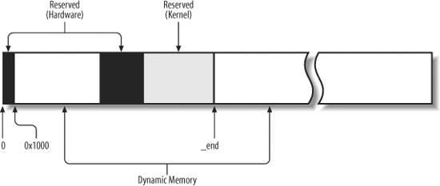
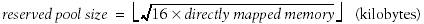
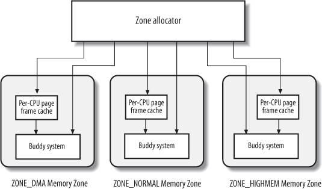
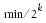

{% include JB/setup %}
{% raw %}
<div>


<a name="understandlk-CHP-8-SECT-1"></a>
<h3 class="docSection1Title">8.1. Page Frame Management</h3><a name="IDX-CHP-8-1971"></a>
<a name="IDX-CHP-8-1972"></a>
<p class="docText1">We saw in the section "<a class="pcalibre5 docLink pcalibre1" href="understandlk-CHP-2-SECT-4.html#understandlk-CHP-2-SECT-4">Paging in Hardware</a>" in <a class="pcalibre5 docLink pcalibre1" href="understandlk-CHP-2.html#understandlk-CHP-2">Chapter 2</a> how the Intel Pentium processor can use two different page frame sizes: 4 KB and 4 MB (or 2 MB if PAE is enabledsee the section "<a class="pcalibre5 docLink pcalibre1" href="understandlk-CHP-2-SECT-4.html#understandlk-CHP-2-SECT-4.5">The Physical Address Extension (PAE) Paging Mechanism</a>" in <a class="pcalibre5 docLink pcalibre1" href="understandlk-CHP-2.html#understandlk-CHP-2">Chapter 2</a>). Linux adopts the smaller 4 KB page frame size as the standard memory allocation unit. This makes things simpler for two reasons:</p>
<ul class="calibre11"><li class="calibre12"><p class="docText1">The Page Fault<a name="IDX-CHP-8-1973"></a> 
 exceptions issued by the paging circuitry are easily interpreted. Either the page requested exists but the process is not allowed to address it, or the page does not exist. In the second case, the memory allocator must find a free<a name="IDX-CHP-8-1974"></a> 
 4 KB page frame and assign it to the process.</p></li><li class="calibre12"><p class="docText1">Although both 4 KB and 4 MB are multiples of all disk block sizes, transfers of data between main memory and disks are in most cases more efficient when the smaller size is used.</p></li></ul>
<a name="understandlk-CHP-8-FIG-1"></a><p class="calibre14"><center class="calibre8">
<h5 class="docFigureTitle">Figure 8-1. Dynamic memory</h5>
</center></p><br class="calibre7"/>
<a name="understandlk-CHP-8-SECT-1.1"></a>
<h4 class="docSection2Title">8.1.1. Page Descriptors</h4><a name="IDX-CHP-8-1975"></a>
<a name="IDX-CHP-8-1976"></a>
<a name="IDX-CHP-8-1977"></a>
<a name="IDX-CHP-8-1978"></a>
<a name="IDX-CHP-8-1979"></a>
<a name="IDX-CHP-8-1980"></a>
<a name="IDX-CHP-8-1981"></a>
<a name="IDX-CHP-8-1982"></a>
<a name="IDX-CHP-8-1983"></a>
<a name="IDX-CHP-8-1984"></a>
<a name="IDX-CHP-8-1985"></a>
<a name="IDX-CHP-8-1986"></a>
<a name="IDX-CHP-8-1987"></a>
<a name="IDX-CHP-8-1988"></a>
<a name="IDX-CHP-8-1989"></a>
<a name="IDX-CHP-8-1990"></a>
<a name="IDX-CHP-8-1991"></a>
<a name="IDX-CHP-8-1992"></a>
<a name="IDX-CHP-8-1993"></a>
<a name="IDX-CHP-8-1994"></a>
<a name="IDX-CHP-8-1995"></a>
<a name="IDX-CHP-8-1996"></a>
<a name="IDX-CHP-8-1997"></a>
<a name="IDX-CHP-8-1998"></a>
<a name="IDX-CHP-8-1999"></a>
<a name="IDX-CHP-8-2000"></a>
<a name="IDX-CHP-8-2001"></a>
<a name="IDX-CHP-8-2002"></a>
<a name="IDX-CHP-8-2003"></a>
<a name="IDX-CHP-8-2004"></a>
<p class="docText1">The kernel must keep track of the current status of each page frame. For instance, it must be able to distinguish the page frames that are used to contain pages that belong to processes from those that contain kernel code or kernel data structures. Similarly, it must be able to determine whether a page frame in dynamic memory is free. A page frame in dynamic memory is free if it does not contain any useful data. It is not free when the page frame contains data of a User Mode process, data of a software cache, dynamically allocated kernel data structures, buffered data of a device driver, code of a kernel module, and so on.</p>
<p class="docText1">State information of a page frame is kept in a page descriptor of type <tt class="calibre25">page</tt>, whose fields are shown in <a class="pcalibre5 docLink pcalibre1" href="#understandlk-CHP-8-TABLE-1">Table 8-1</a>. All page descriptors<a name="IDX-CHP-8-2005"></a> 
 are stored in the <tt class="calibre25">mem_map</tt> array. Because each descriptor is 32 bytes long, the space required by <tt class="calibre25">mem_map</tt> is slightly less than 1% of the whole RAM. The <tt class="calibre25">virt_to_page(addr)</tt> macro yields the address of the page descriptor associated with the linear address <tt class="calibre25">addr</tt>. The <tt class="calibre25">pfn_to_page(pfn)</tt> macro yields the address of the page descriptor associated with the page frame having number <tt class="calibre25">pfn</tt>.</p>
<a name="understandlk-CHP-8-TABLE-1"></a><p class="calibre14"><table cellspacing="0" frame="hsides" rules="all" cellpadding="4" width="100%" class="calibre15"><caption class="calibre33"><h5 class="docFigureTitle">Table 8-1. The fields of the page descriptor</h5></caption><colgroup class="calibre16"><col class="calibre17"/><col class="calibre17"/><col class="calibre17"/></colgroup><thead class="calibre18"><tr class="calibre34"><th class="thead" scope="col"><p class="docText1"><span class="calibre5">Type</span></p></th><th class="thead" scope="col"><p class="docText1"><span class="calibre5">Name</span></p></th><th class="thead" scope="col"><p class="docText1"><span class="calibre5">Description</span></p></th></tr></thead><tr class="calibre2"><td class="docTableCell"><p class="docText2"><tt class="calibre25">unsigned long</tt></p></td><td class="docTableCell"><p class="docText2"><tt class="calibre25">flags</tt></p></td><td class="docTableCell"><p class="docText2">Array of flags (see <a class="pcalibre5 docLink pcalibre1" href="#understandlk-CHP-8-TABLE-2">Table 8-2</a>). Also encodes the zone number to which the page frame belongs.</p></td></tr><tr class="calibre2"><td class="docTableCell"><p class="docText2"><tt class="calibre25">atomic_t</tt></p></td><td class="docTableCell"><p class="docText2"><tt class="calibre25">_count</tt></p></td><td class="docTableCell"><p class="docText2">Page frame's reference counter.</p></td></tr><tr class="calibre2"><td class="docTableCell"><p class="docText2"><tt class="calibre25">atomic_t</tt></p></td><td class="docTableCell"><p class="docText2"><tt class="calibre25">_mapcount</tt></p></td><td class="docTableCell"><p class="docText2">Number of Page Table entries that refer to the page frame (<tt class="calibre25">-</tt>1 if none).</p></td></tr><tr class="calibre2"><td class="docTableCell"><p class="docText2"><tt class="calibre25">unsigned long</tt></p></td><td class="docTableCell"><p class="docText2"><tt class="calibre25">private</tt></p></td><td class="docTableCell"><p class="docText2">Available to the kernel component that is using the page (for instance, it is a buffer head pointer in case of buffer page; see "<a class="pcalibre5 docLink pcalibre1" href="understandlk-CHP-15-SECT-2.html#understandlk-CHP-15-SECT-2.1">Block Buffers and Buffer Heads</a>" in <a class="pcalibre5 docLink pcalibre1" href="understandlk-CHP-15.html#understandlk-CHP-15">Chapter 15</a>). If the page is free, this field is used by the buddy system (see later in this chapter).</p></td></tr><tr class="calibre2"><td class="docTableCell"><p class="docText2"><tt class="calibre25">struct</tt></p><p class="docText2"><tt class="calibre25">address_space *</tt></p></td><td class="docTableCell"><p class="docText2"><tt class="calibre25">mapping</tt></p></td><td class="docTableCell"><p class="docText2">Used when the page is inserted into the page cache (see the section "<a class="pcalibre5 docLink pcalibre1" href="understandlk-CHP-15-SECT-1.html#understandlk-CHP-15-SECT-1">The Page Cache</a>" in <a class="pcalibre5 docLink pcalibre1" href="understandlk-CHP-15.html#understandlk-CHP-15">Chapter 15</a>), or when it belongs to an anonymous region (see the section "<a class="pcalibre5 docLink pcalibre1" href="understandlk-CHP-17-SECT-2.html#understandlk-CHP-17-SECT-2.1">Reverse Mapping for Anonymous Pages</a>" in <a class="pcalibre5 docLink pcalibre1" href="understandlk-CHP-17.html#understandlk-CHP-17">Chapter 17</a>).</p></td></tr><tr class="calibre2"><td class="docTableCell"><p class="docText2"><tt class="calibre25">unsigned long</tt></p></td><td class="docTableCell"><p class="docText2"><tt class="calibre25">index</tt></p></td><td class="docTableCell"><p class="docText2">Used by several kernel components with different meanings. For instance, it identifies the position of the data stored in the page frame within the page's disk image or within an anonymous region (<a class="pcalibre5 docLink pcalibre1" href="understandlk-CHP-15.html#understandlk-CHP-15">Chapter 15</a>), or it stores a swapped-out page identifier (<a class="pcalibre5 docLink pcalibre1" href="understandlk-CHP-17.html#understandlk-CHP-17">Chapter 17</a>).</p></td></tr><tr class="calibre2"><td class="docTableCell"><p class="docText2"><tt class="calibre25">struct list_head</tt></p></td><td class="docTableCell"><p class="docText2"><tt class="calibre25">lru</tt></p></td><td class="docTableCell"><p class="docText2">Contains pointers to the least recently used doubly linked list of pages.</p></td></tr></table></p><br class="calibre7"/>
<p class="docText1">You don't have to fully understand the role of all fields in the page descriptor right now. In the following chapters, we often come back to the fields of the page descriptor. Moreover, several fields have different meaning, according to whether the page frame is free or what kernel component is using the page frame.</p>
<p class="docText1">Let's describe in greater detail two of the fields:</p>
<dl class="docText1"><dt class="calibre7"><br class="calibre7"/><p class="calibre14"><span class="docPubcolor"><span class="docPubcolor"><span class="docMonofont">_count</span></span></span></p></dt>
<dd class="calibre20"><p class="docList">A usage reference counter for the page. If it is set to <tt class="calibre25">-</tt>1, the corresponding page frame is free and can be assigned to any process or to the kernel itself. If it is set to a value greater than or equal to 0, the page frame is assigned to one or more processes or is used to store some kernel data structures. The <tt class="calibre25">page_count( )</tt> function returns the value of the <tt class="calibre25">_count</tt> field increased by one, that is, the number of users of the page.</p></dd><dt class="calibre7"><br class="calibre7"/><p class="calibre14"><span class="docPubcolor"><span class="docPubcolor"><span class="docMonofont">flags</span></span></span></p></dt>
<dd class="calibre20"><p class="docList">Includes up to 32 flags (see <a class="pcalibre5 docLink pcalibre1" href="#understandlk-CHP-8-TABLE-2">Table 8-2</a>) that describe the status of the page frame. For each <tt class="calibre25">PG_</tt><span class="docEmphasis">xyz</span> flag, the kernel defines some macros that manipulate its value. Usually, the <tt class="calibre25">Page</tt><span class="docEmphasis">Xyz</span> macro returns the value of the flag, while the <tt class="calibre25">SetPage</tt><span class="docEmphasis">Xyz</span> and <tt class="calibre25">ClearPage</tt><span class="docEmphasis">Xyz</span> macro set and clear the corresponding bit, respectively.</p></dd></dl>
<a name="understandlk-CHP-8-TABLE-2"></a><p class="calibre14"><table cellspacing="0" frame="hsides" rules="all" cellpadding="4" width="100%" class="calibre15"><caption class="calibre33"><h5 class="docFigureTitle">Table 8-2. Flags describing the status of a page frame</h5></caption><colgroup class="calibre16"><col class="calibre17"/><col class="calibre17"/></colgroup><thead class="calibre18"><tr class="calibre34"><th class="thead" scope="col"><p class="docText1"><span class="calibre5">Flag name</span></p></th><th class="thead" scope="col"><p class="docText1"><span class="calibre5">Meaning</span></p></th></tr></thead><tr class="calibre2"><td class="docTableCell"><p class="docText2"><tt class="calibre25">PG_locked</tt></p></td><td class="docTableCell"><p class="docText2">The page is locked; for instance, it is involved in a disk I/O operation.</p></td></tr><tr class="calibre2"><td class="docTableCell"><p class="docText2"><tt class="calibre25">PG_error</tt></p></td><td class="docTableCell"><p class="docText2">An I/O error occurred while transferring the page.</p></td></tr><tr class="calibre2"><td class="docTableCell"><p class="docText2"><tt class="calibre25">PG_referenced</tt></p></td><td class="docTableCell"><p class="docText2">The page has been recently accessed.</p></td></tr><tr class="calibre2"><td class="docTableCell"><p class="docText2"><tt class="calibre25">PG_uptodate</tt></p></td><td class="docTableCell"><p class="docText2">This flag is set after completing a read operation, unless a disk I/O error happened.</p></td></tr><tr class="calibre2"><td class="docTableCell"><p class="docText2"><tt class="calibre25">PG_dirty</tt></p></td><td class="docTableCell"><p class="docText2">The page has been modified (see the section "<a class="pcalibre5 docLink pcalibre1" href="understandlk-CHP-17-SECT-3.html#understandlk-CHP-17-SECT-3">Implementing the PFRA</a>" in <a class="pcalibre5 docLink pcalibre1" href="understandlk-CHP-17.html#understandlk-CHP-17">Chapter 17</a>).</p></td></tr><tr class="calibre2"><td class="docTableCell"><p class="docText2"><tt class="calibre25">PG_lru</tt></p></td><td class="docTableCell"><p class="docText2">The page is in the active or inactive page list (see the section "<a class="pcalibre5 docLink pcalibre1" href="understandlk-CHP-17-SECT-3.html#understandlk-CHP-17-SECT-3.1">The Least Recently Used (LRU) Lists</a>" in <a class="pcalibre5 docLink pcalibre1" href="understandlk-CHP-17.html#understandlk-CHP-17">Chapter 17</a>).</p></td></tr><tr class="calibre2"><td class="docTableCell"><p class="docText2"><tt class="calibre25">PG_active</tt></p></td><td class="docTableCell"><p class="docText2">The page is in the active page list (see the section "<a class="pcalibre5 docLink pcalibre1" href="understandlk-CHP-17-SECT-3.html#understandlk-CHP-17-SECT-3.1">The Least Recently Used (LRU) Lists</a>" in <a class="pcalibre5 docLink pcalibre1" href="understandlk-CHP-17.html#understandlk-CHP-17">Chapter 17</a>).</p></td></tr><tr class="calibre2"><td class="docTableCell"><p class="docText2"><tt class="calibre25">PG_slab</tt></p></td><td class="docTableCell"><p class="docText2">The page frame is included in a slab (see the section "<a class="pcalibre5 docLink pcalibre1" href="understandlk-CHP-8-SECT-2.html#understandlk-CHP-8-SECT-2">Memory Area Management</a>" later in this chapter).</p></td></tr><tr class="calibre2"><td class="docTableCell"><p class="docText2"><tt class="calibre25">PG_highmem</tt></p></td><td class="docTableCell"><p class="docText2">The page frame belongs to the <tt class="calibre25">ZONE_HIGHMEM</tt> zone (see the following section "<a class="pcalibre5 docLink pcalibre1" href="#understandlk-CHP-8-SECT-1.2">Non-Uniform Memory Access (NUMA)</a>").</p></td></tr><tr class="calibre2"><td class="docTableCell"><p class="docText2"><tt class="calibre25">PG_checked</tt></p></td><td class="docTableCell"><p class="docText2">Used by some filesystems such as Ext2 and Ext3 (see <a class="pcalibre5 docLink pcalibre1" href="understandlk-CHP-18.html#understandlk-CHP-18">Chapter 18</a>).</p></td></tr><tr class="calibre2"><td class="docTableCell"><p class="docText2"><tt class="calibre25">PG_arch_1</tt></p></td><td class="docTableCell"><p class="docText2">Not used on the 80 x 86 architecture.</p></td></tr><tr class="calibre2"><td class="docTableCell"><p class="docText2"><tt class="calibre25">PG_reserved</tt></p></td><td class="docTableCell"><p class="docText2">The page frame is reserved for kernel code or is unusable.</p></td></tr><tr class="calibre2"><td class="docTableCell"><p class="docText2"><tt class="calibre25">PG_private</tt></p></td><td class="docTableCell"><p class="docText2">The <tt class="calibre25">private</tt> field of the page descriptor stores meaningful data.</p></td></tr><tr class="calibre2"><td class="docTableCell"><p class="docText2"><tt class="calibre25">PG_writeback</tt></p></td><td class="docTableCell"><p class="docText2">The page is being written to disk by means of the <tt class="calibre25">writepage</tt> method (see <a class="pcalibre5 docLink pcalibre1" href="understandlk-CHP-16.html#understandlk-CHP-16">Chapter 16</a>) .</p></td></tr><tr class="calibre2"><td class="docTableCell"><p class="docText2"><tt class="calibre25">PG_nosave</tt></p></td><td class="docTableCell"><p class="docText2">Used for system suspend/resume.</p></td></tr><tr class="calibre2"><td class="docTableCell"><p class="docText2"><tt class="calibre25">PG_compound</tt></p></td><td class="docTableCell"><p class="docText2">The page frame is handled through the extended paging mechanism (see the section "<a class="pcalibre5 docLink pcalibre1" href="understandlk-CHP-2-SECT-4.html#understandlk-CHP-2-SECT-4.2">Extended Paging</a>" in <a class="pcalibre5 docLink pcalibre1" href="understandlk-CHP-2.html#understandlk-CHP-2">Chapter 2</a>).</p></td></tr><tr class="calibre2"><td class="docTableCell"><p class="docText2"><tt class="calibre25">PG_swapcache</tt></p></td><td class="docTableCell"><p class="docText2">The page belongs to the swap cache (see the section "<a class="pcalibre5 docLink pcalibre1" href="understandlk-CHP-17-SECT-4.html#understandlk-CHP-17-SECT-4.6">The Swap Cache</a>" in <a class="pcalibre5 docLink pcalibre1" href="understandlk-CHP-17.html#understandlk-CHP-17">Chapter 17</a>).</p></td></tr><tr class="calibre2"><td class="docTableCell"><p class="docText2"><tt class="calibre25">PG_mappedtodisk</tt></p></td><td class="docTableCell"><p class="docText2">All data in the page frame corresponds to blocks allocated on disk.</p></td></tr><tr class="calibre2"><td class="docTableCell"><p class="docText2"><tt class="calibre25">PG_reclaim</tt></p></td><td class="docTableCell"><p class="docText2">The page has been marked to be written to disk in order to reclaim memory.</p></td></tr><tr class="calibre2"><td class="docTableCell"><p class="docText2"><tt class="calibre25">PG_nosave_free</tt></p></td><td class="docTableCell"><p class="docText2">Used for system suspend/resume.</p></td></tr></table></p><br class="calibre7"/>
<a name="understandlk-CHP-8-SECT-1.2"></a>
<h4 class="docSection2Title">8.1.2. Non-Uniform Memory Access (NUMA)</h4><a name="IDX-CHP-8-2006"></a>
<a name="IDX-CHP-8-2007"></a>
<a name="IDX-CHP-8-2008"></a>
<a name="IDX-CHP-8-2009"></a>
<a name="IDX-CHP-8-2010"></a>
<a name="IDX-CHP-8-2011"></a>
<a name="IDX-CHP-8-2012"></a>
<a name="IDX-CHP-8-2013"></a>
<a name="IDX-CHP-8-2014"></a>
<a name="IDX-CHP-8-2015"></a>
<a name="IDX-CHP-8-2016"></a>
<a name="IDX-CHP-8-2017"></a>
<a name="IDX-CHP-8-2018"></a>
<a name="IDX-CHP-8-2019"></a>
<a name="IDX-CHP-8-2020"></a>
<a name="IDX-CHP-8-2021"></a>
<a name="IDX-CHP-8-2022"></a>
<a name="IDX-CHP-8-2023"></a>
<a name="IDX-CHP-8-2024"></a>
<a name="IDX-CHP-8-2025"></a>
<a name="IDX-CHP-8-2026"></a>
<a name="IDX-CHP-8-2027"></a>
<a name="IDX-CHP-8-2028"></a>
<a name="IDX-CHP-8-2029"></a>
<a name="IDX-CHP-8-2030"></a>
<a name="IDX-CHP-8-2031"></a>
<a name="IDX-CHP-8-2032"></a>
<a name="IDX-CHP-8-2033"></a>
<a name="IDX-CHP-8-2034"></a>
<a name="IDX-CHP-8-2035"></a>
<a name="IDX-CHP-8-2036"></a>
<a name="IDX-CHP-8-2037"></a>
<a name="IDX-CHP-8-2038"></a>
<a name="IDX-CHP-8-2039"></a>
<a name="IDX-CHP-8-2040"></a>
<a name="IDX-CHP-8-2041"></a>
<a name="IDX-CHP-8-2042"></a>
<a name="IDX-CHP-8-2043"></a>
<a name="IDX-CHP-8-2044"></a>
<a name="IDX-CHP-8-2045"></a>
<a name="IDX-CHP-8-2046"></a>
<a name="IDX-CHP-8-2047"></a>
<a name="IDX-CHP-8-2048"></a>
<a name="IDX-CHP-8-2049"></a>
<a name="IDX-CHP-8-2050"></a>
<a name="IDX-CHP-8-2051"></a>
<a name="IDX-CHP-8-2052"></a>
<a name="IDX-CHP-8-2053"></a>
<a name="IDX-CHP-8-2054"></a>
<a name="IDX-CHP-8-2055"></a>
<a name="IDX-CHP-8-2056"></a>
<a name="IDX-CHP-8-2057"></a>
<a name="IDX-CHP-8-2058"></a>
<a name="IDX-CHP-8-2059"></a>
<a name="IDX-CHP-8-2060"></a>
<a name="IDX-CHP-8-2061"></a>
<a name="IDX-CHP-8-2062"></a>
<a name="IDX-CHP-8-2063"></a>
<a name="IDX-CHP-8-2064"></a>
<a name="IDX-CHP-8-2065"></a>
<a name="IDX-CHP-8-2066"></a>
<a name="IDX-CHP-8-2067"></a>
<a name="IDX-CHP-8-2068"></a>
<a name="IDX-CHP-8-2069"></a>
<a name="IDX-CHP-8-2070"></a>
<a name="IDX-CHP-8-2071"></a>
<p class="docText1">We are used to thinking of the computer's memory as a homogeneous, shared resource. Disregarding the role of the hardware caches, we expect the time required for a CPU to access a memory location to be essentially the same, regardless of the location's physical address and the CPU. Unfortunately, this assumption is not true in some architectures. For instance, it is not true for some multiprocessor Alpha or MIPS computers.</p>
<p class="docText1">Linux 2.6 supports the <span class="docEmphasis">Non-Uniform Memory Access</span> (<span class="docEmphasis">NUMA</span>) model, in which the access times for different memory locations from a given CPU may vary. The physical memory of the system is partitioned in several <span class="docEmphasis">nodes</span><a name="IDX-CHP-8-2072"></a> 
. The time needed by a given CPU to access pages within a single node is the same. However, this time might not be the same for two different CPUs. For every CPU, the kernel tries to minimize the number of accesses to costly nodes by carefully selecting where the kernel data structures that are most often referenced by the CPU are stored.<sup class="docFootnote"><a class="pcalibre5 docLink pcalibre1" href="#understandlk-CHP-8-FN1">[*]</a></sup></p><blockquote class="calibre22"><p class="docFootnote1"><sup class="calibre24"><a name="understandlk-CHP-8-FN1">[*]</a></sup> Furthermore, the Linux kernel makes use of NUMA even for some peculiar uniprocessor systems that have huge "holes" in the physical address space. The kernel handles these architectures by assigning the contiguous subranges of valid physical addresses to different memory nodes<a name="IDX-CHP-8-2073"></a> 
.</p></blockquote>
<p class="docText1">The physical memory inside each node can be split into several zones, as we will see in the next section. Each node has a descriptor of type <tt class="calibre25">pg_data_t</tt>, whose fields are shown in <a class="pcalibre5 docLink pcalibre1" href="#understandlk-CHP-8-TABLE-3">Table 8-3</a>. All node descriptors are stored in a singly linked list, whose first element is pointed to by the <tt class="calibre25">pgdat_list</tt> variable.</p>
<a name="understandlk-CHP-8-TABLE-3"></a><p class="calibre14"><table cellspacing="0" frame="hsides" rules="all" cellpadding="4" width="100%" class="calibre15"><caption class="calibre33"><h5 class="docFigureTitle">Table 8-3. The fields of the node descriptor</h5></caption><colgroup class="calibre16"><col class="calibre17"/><col class="calibre17"/><col class="calibre17"/></colgroup><thead class="calibre18"><tr class="calibre34"><th class="thead" scope="col"><p class="docText1"><span class="calibre5">Type</span></p></th><th class="thead" scope="col"><p class="docText1"><span class="calibre5">Name</span></p></th><th class="thead" scope="col"><p class="docText1"><span class="calibre5">Description</span></p></th></tr></thead><tr class="calibre2"><td class="docTableCell"><p class="docText2"><tt class="calibre25">struct zone [ ]</tt></p></td><td class="docTableCell"><p class="docText2"><tt class="calibre25">node_zones</tt></p></td><td class="docTableCell"><p class="docText2">Array of zone descriptors of the node</p></td></tr><tr class="calibre2"><td class="docTableCell"><p class="docText2"><tt class="calibre25">struct zonelist [ ]</tt></p></td><td class="docTableCell"><p class="docText2"><tt class="calibre25">node_zonelists</tt></p></td><td class="docTableCell"><p class="docText2">Array of <tt class="calibre25">zonelist</tt> data structures used by the page allocator (see the later section "<a class="pcalibre5 docLink pcalibre1" href="#understandlk-CHP-8-SECT-1.3">Memory Zones</a>")</p></td></tr><tr class="calibre2"><td class="docTableCell"><p class="docText2"><tt class="calibre25">int</tt></p></td><td class="docTableCell"><p class="docText2"><tt class="calibre25">nr_zones</tt></p></td><td class="docTableCell"><p class="docText2">Number of zones in the node</p></td></tr><tr class="calibre2"><td class="docTableCell"><p class="docText2"><tt class="calibre25">struct page *</tt></p></td><td class="docTableCell"><p class="docText2"><tt class="calibre25">node_mem_map</tt></p></td><td class="docTableCell"><p class="docText2">Array of page descriptors of the node</p></td></tr><tr class="calibre2"><td class="docTableCell"><p class="docText2"><tt class="calibre25">struct</tt></p><p class="docText2"><tt class="calibre25">bootmem_data *</tt></p></td><td class="docTableCell"><p class="docText2"><tt class="calibre25">bdata</tt></p></td><td class="docTableCell"><p class="docText2">Used in the kernel initialization phase</p></td></tr><tr class="calibre2"><td class="docTableCell"><p class="docText2"><tt class="calibre25">unsigned long</tt></p></td><td class="docTableCell"><p class="docText2"><tt class="calibre25">node_start_pfn</tt></p></td><td class="docTableCell"><p class="docText2">Index of the first page frame in the node</p></td></tr><tr class="calibre2"><td class="docTableCell"><p class="docText2"><tt class="calibre25">unsigned long</tt></p></td><td class="docTableCell"><p class="docText2"><tt class="calibre25">node_present_pages</tt></p></td><td class="docTableCell"><p class="docText2">Size of the memory node, excluding holes (in page frames)</p></td></tr><tr class="calibre2"><td class="docTableCell"><p class="docText2"><tt class="calibre25">unsigned long</tt></p></td><td class="docTableCell"><p class="docText2"><tt class="calibre25">node_spanned_pages</tt></p></td><td class="docTableCell"><p class="docText2">Size of the node, including holes (in page frames)</p></td></tr><tr class="calibre2"><td class="docTableCell"><p class="docText2"><tt class="calibre25">int</tt></p></td><td class="docTableCell"><p class="docText2"><tt class="calibre25">node_id</tt></p></td><td class="docTableCell"><p class="docText2">Identifier of the node</p></td></tr><tr class="calibre2"><td class="docTableCell"><p class="docText2"><tt class="calibre25">pg_data_t *</tt></p></td><td class="docTableCell"><p class="docText2"><tt class="calibre25">pgdat_next</tt></p></td><td class="docTableCell"><p class="docText2">Next item in the memory node list</p></td></tr><tr class="calibre2"><td class="docTableCell"><p class="docText2">wait_queue_head_t</p></td><td class="docTableCell"><p class="docText2">kswapd_wait</p></td><td class="docTableCell"><p class="docText2">Wait queue for the <span class="docEmphasis">kswapd</span><a name="IDX-CHP-8-2074"></a> 
 pageout daemon (see the section "<a class="pcalibre5 docLink pcalibre1" href="understandlk-CHP-17-SECT-3.html#understandlk-CHP-17-SECT-3.4">Periodic Reclaiming</a>" in <a class="pcalibre5 docLink pcalibre1" href="understandlk-CHP-17.html#understandlk-CHP-17">Chapter 17</a>)</p></td></tr><tr class="calibre2"><td class="docTableCell"><p class="docText2">struct task_struct *</p></td><td class="docTableCell"><p class="docText2">kswapd</p></td><td class="docTableCell"><p class="docText2">Pointer to the process descriptor of the <span class="docEmphasis">kswapd</span> kernel thread</p></td></tr><tr class="calibre2"><td class="docTableCell"><p class="docText2">int</p></td><td class="docTableCell"><p class="docText2">kswapd_max_order</p></td><td class="docTableCell"><p class="docText2">Logarithmic size of free blocks to be created by <span class="docEmphasis">kswapd</span></p></td></tr></table></p><br class="calibre7"/>
<p class="docText1">As usual, we are mostly concerned with the 80 x 86 architecture. IBM-compatible PCs use the Uniform Memory Access model (UMA), thus the NUMA support is not really required. However, even if NUMA support is not compiled in the kernel, Linux makes use of a single node that includes all system physical memory. Thus, the <tt class="calibre25">pgdat_list</tt> variable points to a list consisting of a single elementthe node 0 descriptorstored in the <tt class="calibre25">contig_page_data</tt> variable.</p>
<p class="docText1">On the 80 x 86 architecture, grouping the physical memory in a single node might appear useless; however, this approach makes the memory handling code more portable, because the kernel can assume that the physical memory is partitioned in one or more nodes in all architectures.<sup class="docFootnote"><a class="pcalibre5 docLink pcalibre1" href="#understandlk-CHP-8-FN2">[*]</a></sup></p><blockquote class="calibre22"><p class="docFootnote1"><sup class="calibre24"><a name="understandlk-CHP-8-FN2">[*]</a></sup> We have another example of this kind of design choice: Linux uses four levels of Page Tables even when the hardware architecture defines just two levels (see the section "<a class="pcalibre5 docLink pcalibre1" href="understandlk-CHP-2-SECT-5.html#understandlk-CHP-2-SECT-5">Paging in Linux</a>" in <a class="pcalibre5 docLink pcalibre1" href="understandlk-CHP-2.html#understandlk-CHP-2">Chapter 2</a>).</p></blockquote>
<a name="understandlk-CHP-8-SECT-1.3"></a>
<h4 class="docSection2Title">8.1.3. Memory Zones</h4><a name="IDX-CHP-8-2075"></a>
<a name="IDX-CHP-8-2076"></a>
<a name="IDX-CHP-8-2077"></a>
<a name="IDX-CHP-8-2078"></a>
<a name="IDX-CHP-8-2079"></a>
<a name="IDX-CHP-8-2080"></a>
<a name="IDX-CHP-8-2081"></a>
<a name="IDX-CHP-8-2082"></a>
<a name="IDX-CHP-8-2083"></a>
<a name="IDX-CHP-8-2084"></a>
<a name="IDX-CHP-8-2085"></a>
<p class="docText1">In an ideal computer architecture, a page frame is a memory storage unit that can be used for anything: storing kernel and user data, buffering disk data, and so on. Every kind of page of data can be stored in a page frame, without limitations.</p>
<p class="docText1">However, real computer architectures have hardware constraints that may limit the way page frames can be used. In particular, the Linux kernel must deal with two hardware constraints of the 80 x 86 architecture:</p>
<ul class="calibre11"><li class="calibre12"><p class="docText1">The Direct Memory Access (DMA) processors for old ISA buses have a strong limitation: they are able to address only the first 16 MB of RAM.</p></li><li class="calibre12"><p class="docText1">In modern 32-bit computers with lots of RAM, the CPU cannot directly access all physical memory because the linear address space is too small.</p></li></ul>
<p class="docText1">To cope with these two limitations, Linux 2.6 partitions the physical memory of every memory node into three <span class="docEmphasis">zones</span>. In the 80 x 86 UMA architecture the zones are:</p>
<dl class="docText1"><dt class="calibre7"><br class="calibre7"/><p class="calibre14"><span class="docPubcolor"><span class="docPubcolor"><span class="docMonofont">ZONE_DMA</span></span></span></p></dt>
<dd class="calibre20"><p class="docList">Contains page frames of memory below 16 MB</p></dd><dt class="calibre7"><br class="calibre7"/><p class="calibre14"><span class="docPubcolor"><span class="docPubcolor"><span class="docMonofont">ZONE_NORMAL</span></span></span></p></dt>
<dd class="calibre20"><p class="docList">Contains page frames of memory at and above 16 MB and below 896 MB</p></dd><dt class="calibre7"><br class="calibre7"/><p class="calibre14"><span class="docPubcolor"><span class="docPubcolor"><span class="docMonofont">ZONE_HIGHMEM</span></span></span></p></dt>
<dd class="calibre20"><p class="docList">Contains page frames of memory at and above 896 MB</p></dd></dl>
<p class="docText1">The <tt class="calibre25">ZONE_DMA</tt> zone includes page frames that can be used by old ISA-based devices by means of the DMA. (The section "<a class="pcalibre5 docLink pcalibre1" href="understandlk-CHP-13-SECT-4.html#understandlk-CHP-13-SECT-4.5">Direct Memory Access (DMA)</a>" in <a class="pcalibre5 docLink pcalibre1" href="understandlk-CHP-13.html#understandlk-CHP-13">Chapter 13</a> gives further details on DMA.)</p>
<p class="docText1">The <tt class="calibre25">ZONE_DMA</tt> and <tt class="calibre25">ZONE_NORMAL</tt> zones include the "normal" page frames that can be directly accessed by the kernel through the linear mapping in the fourth gigabyte of the linear address space (see the section "<a class="pcalibre5 docLink pcalibre1" href="understandlk-CHP-2-SECT-5.html#understandlk-CHP-2-SECT-5.5">Kernel Page Tables</a>" in <a class="pcalibre5 docLink pcalibre1" href="understandlk-CHP-2.html#understandlk-CHP-2">Chapter 2</a>). Conversely, the <tt class="calibre25">ZONE_HIGHMEM</tt> zone includes page frames that cannot be directly accessed by the kernel through the linear mapping in the fourth gigabyte of linear address space (see the section "<a class="pcalibre5 docLink pcalibre1" href="#understandlk-CHP-8-SECT-1.6">Kernel Mappings of High-Memory Page Frames</a>" later in this chapter). The <tt class="calibre25">ZONE_HIGHMEM</tt> zone is always empty on 64-bit architectures.</p>
<p class="docText1">Each memory zone has its own descriptor of type <tt class="calibre25">zone</tt>. Its fields are shown in <a class="pcalibre5 docLink pcalibre1" href="#understandlk-CHP-8-TABLE-4">Table 8-4</a>.</p>
<a name="understandlk-CHP-8-TABLE-4"></a><p class="calibre14"><table cellspacing="0" frame="hsides" rules="all" cellpadding="4" width="100%" class="calibre15"><caption class="calibre33"><h5 class="docFigureTitle">Table 8-4. The fields of the zone descriptor</h5></caption><colgroup class="calibre16"><col class="calibre17"/><col class="calibre17"/><col class="calibre17"/></colgroup><thead class="calibre18"><tr class="calibre34"><th class="thead" scope="col"><p class="docText1"><span class="calibre5">Type</span></p></th><th class="thead" scope="col"><p class="docText1"><span class="calibre5">Name</span></p></th><th class="thead" scope="col"><p class="docText1"><span class="calibre5">Description</span></p></th></tr></thead><tr class="calibre2"><td class="docTableCell"><p class="docText2"><tt class="calibre25">unsigned long</tt></p></td><td class="docTableCell"><p class="docText2"><tt class="calibre25">free_pages</tt></p></td><td class="docTableCell"><p class="docText2">Number of free pages in the zone.</p></td></tr><tr class="calibre2"><td class="docTableCell"><p class="docText2"><tt class="calibre25">unsigned long</tt></p></td><td class="docTableCell"><p class="docText2"><tt class="calibre25">pages_min</tt></p></td><td class="docTableCell"><p class="docText2">Number of reserved pages of the zone (see the section "<a class="pcalibre5 docLink pcalibre1" href="#understandlk-CHP-8-SECT-1.4">The Pool of Reserved Page Frames</a>" later in this chapter).</p></td></tr><tr class="calibre2"><td class="docTableCell"><p class="docText2"><tt class="calibre25">unsigned long</tt></p></td><td class="docTableCell"><p class="docText2"><tt class="calibre25">pages_low</tt></p></td><td class="docTableCell"><p class="docText2">Low watermark for page frame reclaiming; also used by the zone allocator as a threshold value (see the section "<a class="pcalibre5 docLink pcalibre1" href="#understandlk-CHP-8-SECT-1.9">The Zone Allocator</a>" later in this chapter).</p></td></tr><tr class="calibre2"><td class="docTableCell"><p class="docText2"><tt class="calibre25">unsigned long</tt></p></td><td class="docTableCell"><p class="docText2"><tt class="calibre25">pages_high</tt></p></td><td class="docTableCell"><p class="docText2">High watermark for page frame reclaiming; also used by the zone allocator as a threshold value.</p></td></tr><tr class="calibre2"><td class="docTableCell"><p class="docText2"><tt class="calibre25">unsigned long</tt> []</p></td><td class="docTableCell"><p class="docText2">lowmem_reserve</p></td><td class="docTableCell"><p class="docText2">Specifies how many page frames in each zone must be reserved for handling low-on-memory critical situations.</p></td></tr><tr class="calibre2"><td class="docTableCell"><p class="docText2">struct per_cpu_pageset[]</p></td><td class="docTableCell"><p class="docText2">pageset</p></td><td class="docTableCell"><p class="docText2">Data structure used to implement special caches of single page frames (see the section "<a class="pcalibre5 docLink pcalibre1" href="#understandlk-CHP-8-SECT-1.8">The Per-CPU Page Frame Cache</a>" later in this chapter).</p></td></tr><tr class="calibre2"><td class="docTableCell"><p class="docText2"><tt class="calibre25">spinlock_t</tt></p></td><td class="docTableCell"><p class="docText2"><tt class="calibre25">lock</tt></p></td><td class="docTableCell"><p class="docText2">Spin lock protecting the descriptor.</p></td></tr><tr class="calibre2"><td class="docTableCell"><p class="docText2">struct free_area []</p></td><td class="docTableCell"><p class="docText2">free_area</p></td><td class="docTableCell"><p class="docText2">Identifies the blocks of free page frames in the zone (see the section "<a class="pcalibre5 docLink pcalibre1" href="#understandlk-CHP-8-SECT-1.7">The Buddy System Algorithm</a>" later in this chapter).</p></td></tr><tr class="calibre2"><td class="docTableCell"><p class="docText2"><tt class="calibre25">spinlock_t</tt></p></td><td class="docTableCell"><p class="docText2"><tt class="calibre25">lru_lock</tt></p></td><td class="docTableCell"><p class="docText2">Spin lock for the active and inactive lists.</p></td></tr><tr class="calibre2"><td class="docTableCell"><p class="docText2"><tt class="calibre25">struct list head</tt></p></td><td class="docTableCell"><p class="docText2"><tt class="calibre25">active_list</tt></p></td><td class="docTableCell"><p class="docText2">List of active pages in the zone (see <a class="pcalibre5 docLink pcalibre1" href="understandlk-CHP-17.html#understandlk-CHP-17">Chapter 17</a>).</p></td></tr><tr class="calibre2"><td class="docTableCell"><p class="docText2"><tt class="calibre25">struct list head</tt></p></td><td class="docTableCell"><p class="docText2"><tt class="calibre25">inactive_list</tt></p></td><td class="docTableCell"><p class="docText2">List of inactive pages in the zone (see <a class="pcalibre5 docLink pcalibre1" href="understandlk-CHP-17.html#understandlk-CHP-17">Chapter 17</a>).</p></td></tr><tr class="calibre2"><td class="docTableCell"><p class="docText2">unsigned long</p></td><td class="docTableCell"><p class="docText2">nr_scan_active</p></td><td class="docTableCell"><p class="docText2">Number of active pages to be scanned when reclaiming memory (see the section "<a class="pcalibre5 docLink pcalibre1" href="understandlk-CHP-17-SECT-3.html#understandlk-CHP-17-SECT-3.2">Low On Memory Reclaiming</a>" in <a class="pcalibre5 docLink pcalibre1" href="understandlk-CHP-17.html#understandlk-CHP-17">Chapter 17</a>).</p></td></tr><tr class="calibre2"><td class="docTableCell"><p class="docText2">unsigned long</p></td><td class="docTableCell"><p class="docText2">nr_scan_inactive</p></td><td class="docTableCell"><p class="docText2">Number of inactive pages to be scanned when reclaiming memory.</p></td></tr><tr class="calibre2"><td class="docTableCell"><p class="docText2"><tt class="calibre25">unsigned long</tt></p></td><td class="docTableCell"><p class="docText2"><tt class="calibre25">nr_active</tt></p></td><td class="docTableCell"><p class="docText2">Number of pages in the zone's active list.</p></td></tr><tr class="calibre2"><td class="docTableCell"><p class="docText2"><tt class="calibre25">unsigned long</tt></p></td><td class="docTableCell"><p class="docText2"><tt class="calibre25">nr_inactive</tt></p></td><td class="docTableCell"><p class="docText2">Number of pages in the zone's inactive list.</p></td></tr><tr class="calibre2"><td class="docTableCell"><p class="docText2"><tt class="calibre25">unsigned long</tt></p></td><td class="docTableCell"><p class="docText2"><tt class="calibre25">pages_scanned</tt></p></td><td class="docTableCell"><p class="docText2">Counter used when doing page frame reclaiming in the zone.</p></td></tr><tr class="calibre2"><td class="docTableCell"><p class="docText2">int</p></td><td class="docTableCell"><p class="docText2">all_unreclaimable</p></td><td class="docTableCell"><p class="docText2">Flag set when the zone is full of unreclaimable pages.</p></td></tr><tr class="calibre2"><td class="docTableCell"><p class="docText2">int</p></td><td class="docTableCell"><p class="docText2">temp_priority</p></td><td class="docTableCell"><p class="docText2">Temporary zone's priority (used when doing page frame reclaiming).</p></td></tr><tr class="calibre2"><td class="docTableCell"><p class="docText2">int</p></td><td class="docTableCell"><p class="docText2">prev_priority</p></td><td class="docTableCell"><p class="docText2">Zone's priority ranging between 12 and 0 (used by the page frame reclaiming algorithm, see the section "<a class="pcalibre5 docLink pcalibre1" href="understandlk-CHP-17-SECT-3.html#understandlk-CHP-17-SECT-3.2">Low On Memory Reclaiming</a>" in <a class="pcalibre5 docLink pcalibre1" href="understandlk-CHP-17.html#understandlk-CHP-17">Chapter 17</a>).</p></td></tr><tr class="calibre2"><td class="docTableCell"><p class="docText2">wait_queue_head_t *</p></td><td class="docTableCell"><p class="docText2">wait_table</p></td><td class="docTableCell"><p class="docText2">Hash table of wait queues of processes waiting for one of the pages of the zone.</p></td></tr><tr class="calibre2"><td class="docTableCell"><p class="docText2">unsigned long</p></td><td class="docTableCell"><p class="docText2">wait_table_size</p></td><td class="docTableCell"><p class="docText2">Size of the wait queue hash table.</p></td></tr><tr class="calibre2"><td class="docTableCell"><p class="docText2">unsigned long</p></td><td class="docTableCell"><p class="docText2">wait_table_bits</p></td><td class="docTableCell"><p class="docText2">Power-of-2 order of the size of the wait queue hash table array.</p></td></tr><tr class="calibre2"><td class="docTableCell"><p class="docText2">struct pglist_data *</p></td><td class="docTableCell"><p class="docText2">zone_pgdat</p></td><td class="docTableCell"><p class="docText2">Memory node (see the earlier section "<a class="pcalibre5 docLink pcalibre1" href="#understandlk-CHP-8-SECT-1.2">Non-Uniform Memory Access (NUMA)</a>").</p></td></tr><tr class="calibre2"><td class="docTableCell"><p class="docText2">struct page *</p></td><td class="docTableCell"><p class="docText2">zone_mem_map</p></td><td class="docTableCell"><p class="docText2">Pointer to first page descriptor of the zone.</p></td></tr><tr class="calibre2"><td class="docTableCell"><p class="docText2">unsigned long</p></td><td class="docTableCell"><p class="docText2">zone_start_pfn</p></td><td class="docTableCell"><p class="docText2">Index of the first page frame of the zone.</p></td></tr><tr class="calibre2"><td class="docTableCell"><p class="docText2">unsigned long</p></td><td class="docTableCell"><p class="docText2">spanned_pages</p></td><td class="docTableCell"><p class="docText2">Total size of zone in pages, including holes.</p></td></tr><tr class="calibre2"><td class="docTableCell"><p class="docText2">unsigned long</p></td><td class="docTableCell"><p class="docText2">present_pages</p></td><td class="docTableCell"><p class="docText2">Total size of zone in pages, excluding holes.</p></td></tr><tr class="calibre2"><td class="docTableCell"><p class="docText2"><tt class="calibre25">char *</tt></p></td><td class="docTableCell"><p class="docText2"><tt class="calibre25">name</tt></p></td><td class="docTableCell"><p class="docText2">Pointer to the conventional name of the zone: "DMA," "Normal," or "HighMem."</p></td></tr></table></p><br class="calibre7"/>
<p class="docText1">Many fields of the <tt class="calibre25">zone</tt> structure are used for page frame reclaiming and will be described in <a class="pcalibre5 docLink pcalibre1" href="understandlk-CHP-17.html#understandlk-CHP-17">Chapter 17</a>.</p>
<p class="docText1">Each page descriptor has links to the memory node and to the zone inside the node that includes the corresponding page frame. To save space, these links are not stored as classical pointers; rather, they are encoded as indices stored in the high bits of the <tt class="calibre25">flags</tt> field. In fact, the number of flags that characterize a page frame is limited, thus it is always possible to reserve the most significant bits of the <tt class="calibre25">flags</tt> field to encode the proper memory node and zone number.<sup class="docFootnote"><a class="pcalibre5 docLink pcalibre1" href="#understandlk-CHP-8-FN3">[*]</a></sup> The <tt class="calibre25">page_zone( )</tt> function receives as its parameter the address of a page descriptor; it reads the most significant bits of the <tt class="calibre25">flags</tt> field in the page descriptor, then it determines the address of the corresponding zone descriptor by looking in the <tt class="calibre25">zone_table</tt> array. This array is initialized at boot time with the addresses of all zone descriptors of all memory nodes.</p><blockquote class="calibre22"><p class="docFootnote1"><sup class="calibre24"><a name="understandlk-CHP-8-FN3">[*]</a></sup> The number of bits reserved for the indices depends on whether the kernel supports the NUMA model and on the size of the <tt class="calibre42">flags</tt> field. If NUMA is not supported, the <tt class="calibre42">flags</tt> field has two bits for the zone index and one bitalways set to zerofor the node index. On NUMA 32-bit architectures, <tt class="calibre42">flags</tt> has two bits for the zone index and six bits for the node number. Finally, on NUMA 64-bit architectures, the 64-bit <tt class="calibre42">flags</tt> field has 2 bits for the zone index and 10 bits for the node number.</p></blockquote>
<p class="docText1">When the kernel invokes a memory allocation function, it must specify the zones that contain the requested page frames. The kernel usually specifies which zones it's willing to use. For instance, if a page frame must be directly mapped in the fourth gigabyte of linear addresses but it is not going to be used for ISA DMA transfers, then the kernel requests a page frame either in <tt class="calibre25">ZONE_NORMAL</tt> or in <tt class="calibre25">ZONE_DMA</tt>. Of course, the page frame should be obtained from <tt class="calibre25">ZONE_DMA</tt> only if <tt class="calibre25">ZONE_NORMAL</tt> does not have free page frames. To specify the preferred zones in a memory allocation request, the kernel uses the <tt class="calibre25">zonelist</tt> data structure, which is an array of zone descriptor pointers.</p>
<a name="understandlk-CHP-8-SECT-1.4"></a>
<h4 class="docSection2Title">8.1.4. The Pool of Reserved Page Frames</h4><a name="IDX-CHP-8-2086"></a>
<a name="IDX-CHP-8-2087"></a>
<a name="IDX-CHP-8-2088"></a>
<a name="IDX-CHP-8-2089"></a>
<p class="docText1">Memory allocation requests can be satisfied in two different ways. If enough free memory is available, the request can be satisfied immediately. Otherwise, some memory reclaiming must take place, and the kernel control path that made the request is blocked until additional memory has been freed.</p>
<p class="docText1">However, some kernel control paths cannot be blocked while requesting memorythis happens, for instance, when handling an interrupt or when executing code inside a critical region. In these cases, a kernel control path should issue <span class="docEmphasis">atomic memory allocation requests</span> (using the <tt class="calibre25">GFP_ATOMIC</tt> flag; see the later section "<a class="pcalibre5 docLink pcalibre1" href="#understandlk-CHP-8-SECT-1.5">The Zoned Page Frame Allocator</a>"). An atomic request never blocks: if there are not enough free pages, the allocation simply fails.</p>
<p class="docText1">Although there is no way to ensure that an atomic memory allocation request never fails, the kernel tries hard to minimize the likelihood of this unfortunate event. In order to do this, the kernel reserves a pool of page frames for atomic memory allocation requests to be used only on low-on-memory conditions.</p>
<p class="docText1">The amount of the reserved memory (in kilobytes) is stored in the <tt class="calibre25">min_free_kbytes</tt> variable. Its initial value is set during kernel initialization and depends on the amount of physical memory that is directly mapped in the kernel's fourth gigabyte of linear addressesthat is, it depends on the number of page frames included in the <tt class="calibre25">ZONE_DMA</tt> and <tt class="calibre25">ZONE_NORMAL</tt> memory zones:</p>
<p class="docText1"></p>
<p class="docText1">However, initially <tt class="calibre25">min_free_kbytes</tt> cannot be lower than 128 and greater than 65,536.<sup class="docFootnote"><a class="pcalibre5 docLink pcalibre1" href="#understandlk-CHP-8-FN4">[*]</a></sup></p><blockquote class="calibre22"><p class="docFootnote1"><sup class="calibre24"><a name="understandlk-CHP-8-FN4">[*]</a></sup> The amount of reserved memory can be changed later by the system administrator either by writing in the <span class="docEmphasis">/proc/sys/vm/min_free_kbytes</span> file or by issuing a suitable <tt class="calibre42">sysctl( )</tt><a name="IDX-CHP-8-2090"></a> 
 system call.</p></blockquote>
<p class="docText1">The <tt class="calibre25">ZONE_DMA</tt> and <tt class="calibre25">ZONE_NORMAL</tt> memory zones contribute to the reserved memory with a number of page frames proportional to their relative sizes. For instance, if the <tt class="calibre25">ZONE_NORMAL</tt> zone is eight times bigger than <tt class="calibre25">ZONE_DMA</tt>, seven-eighths of the page frames will be taken from <tt class="calibre25">ZONE_NORMAL</tt> and one-eighth from <tt class="calibre25">ZONE_DMA</tt>.</p>
<p class="docText1">The <tt class="calibre25">pages_min</tt> field of the <tt class="calibre25">zone</tt> descriptor stores the number of reserved page frames inside the zone. As we'll see in <a class="pcalibre5 docLink pcalibre1" href="understandlk-CHP-17.html#understandlk-CHP-17">Chapter 17</a>, this field plays also a role for the page frame reclaiming algorithm, together with the <tt class="calibre25">pages_low</tt> and <tt class="calibre25">pages_high</tt> fields. The <tt class="calibre25">pages_low</tt> field is always set to 5/4 of the value of <tt class="calibre25">pages_min</tt>, and <tt class="calibre25">pages_high</tt> is always set to 3/2 of the value of <tt class="calibre25">pages_min</tt>.</p>
<a name="understandlk-CHP-8-SECT-1.5"></a>
<h4 class="docSection2Title">8.1.5. The Zoned Page Frame Allocator</h4><a name="IDX-CHP-8-2091"></a>
<a name="IDX-CHP-8-2092"></a>
<p class="docText1">The kernel subsystem that handles the memory allocation requests for groups of contiguous page frames is called the <span class="docEmphasis">zoned page frame allocator</span><a name="IDX-CHP-8-2093"></a> 
. Its main components are shown in <a class="pcalibre5 docLink pcalibre1" href="#understandlk-CHP-8-FIG-2">Figure 8-2</a>.</p>
<p class="docText1">The component named "zone allocator<a name="IDX-CHP-8-2094"></a> 
" receives the requests for allocation and deallocation of dynamic memory. In the case of allocation requests, the component searches a memory zone that includes a group of contiguous page frames that can satisfy the request (see the later section "<a class="pcalibre5 docLink pcalibre1" href="#understandlk-CHP-8-SECT-1.9">The Zone Allocator</a>"). Inside each zone, page frames are handled by a component named "buddy system<a name="IDX-CHP-8-2095"></a> 
" (see the later section "<a class="pcalibre5 docLink pcalibre1" href="#understandlk-CHP-8-SECT-1.7">The Buddy System Algorithm</a>"). To get better system performance, a small number of page frames are kept in cache to quickly satisfy the allocation requests for single page frames (see the later section "<a class="pcalibre5 docLink pcalibre1" href="#understandlk-CHP-8-SECT-1.8">The Per-CPU Page Frame Cache</a>").</p>
<a name="understandlk-CHP-8-FIG-2"></a><p class="calibre14"><center class="calibre8">
<h5 class="docFigureTitle">Figure 8-2. Components of the zoned page frame allocator</h5>
</center></p><br class="calibre7"/>
<a name="understandlk-CHP-8-SECT-1.5.1"></a>
<h5 class="docSection3Title">8.1.5.1. Requesting and releasing page frames</h5><a name="IDX-CHP-8-2096"></a>
<a name="IDX-CHP-8-2097"></a>
<a name="IDX-CHP-8-2098"></a>
<a name="IDX-CHP-8-2099"></a>
<a name="IDX-CHP-8-2100"></a>
<a name="IDX-CHP-8-2101"></a>
<a name="IDX-CHP-8-2102"></a>
<a name="IDX-CHP-8-2103"></a>
<a name="IDX-CHP-8-2104"></a>
<a name="IDX-CHP-8-2105"></a>
<a name="IDX-CHP-8-2106"></a>
<a name="IDX-CHP-8-2107"></a>
<a name="IDX-CHP-8-2108"></a>
<a name="IDX-CHP-8-2109"></a>
<a name="IDX-CHP-8-2110"></a>
<a name="IDX-CHP-8-2111"></a>
<a name="IDX-CHP-8-2112"></a>
<a name="IDX-CHP-8-2113"></a>
<a name="IDX-CHP-8-2114"></a>
<a name="IDX-CHP-8-2115"></a>
<p class="docText1">Page frames can be requested by using six slightly different functions and macros. Unless otherwise stated, they return the linear address of the first allocated page or return <tt class="calibre25">NULL</tt> if the allocation failed.</p>
<dl class="docText1"><dt class="calibre7"><br class="calibre7"/><p class="calibre14"><span class="docPubcolor"><span class="docPubcolor"><span class="docMonofont">alloc_pages(gfp_mask, order)</span></span></span></p></dt>
<dd class="calibre20"><p class="docList">Macro used to request 2<sup class="calibre37">order</sup> contiguous page frames. It returns the address of the descriptor of the first allocated page frame or returns <tt class="calibre25">NULL</tt> if the allocation failed.</p></dd><dt class="calibre7"><br class="calibre7"/><p class="calibre14"><span class="docPubcolor"><span class="docPubcolor"><span class="docMonofont">alloc_page(gfp_mask)</span></span></span></p></dt>
<dd class="calibre20"><p class="docList">Macro used to get a single page frame; it expands to:</p>
<pre class="calibre60">
alloc_pages(gfp_mask, 0)</pre><br class="calibre7"/>
<p class="docList">It returns the address of the descriptor of the allocated page frame or returns <tt class="calibre25">NULL</tt> if the allocation failed.</p></dd><dt class="calibre7"><br class="calibre7"/><p class="calibre14"><span class="docPubcolor"><span class="docPubcolor"><span class="docMonofont">_ _get_free_pages(gfp_mask, order)</span></span></span></p></dt>
<dd class="calibre20"><p class="docList">Function that is similar to <tt class="calibre25">alloc_pages( )</tt>, but it returns the linear address of the first allocated page.</p></dd><dt class="calibre7"><br class="calibre7"/><p class="calibre14"><span class="docPubcolor"><span class="docPubcolor"><span class="docMonofont">_ _get_free_page(gfp_mask)</span></span></span></p></dt>
<dd class="calibre20"><p class="docList">Macro used to get a single page frame; it expands to:</p>
<pre class="calibre60">
_ _get_free_pages(gfp_mask, 0)</pre><br class="calibre7"/>
</dd><dt class="calibre7"><br class="calibre7"/><p class="calibre14"><span class="docPubcolor"><span class="docPubcolor"><span class="docMonofont">get_zeroed_page(gfp_mask)</span></span></span></p></dt>
<dd class="calibre20"><p class="docList">Function used to obtain a page frame filled with zeros; it invokes:</p>
<pre class="calibre60">
alloc_pages(gfp_mask | _ _GFP_ZERO, 0)</pre><br class="calibre7"/>
<p class="docList">and returns the linear address of the obtained page frame.</p></dd><dt class="calibre7"><br class="calibre7"/><p class="calibre14"><span class="docPubcolor"><span class="docPubcolor"><span class="docMonofont">_ _get_dma_pages(gfp_mask, order)</span></span></span></p></dt>
<dd class="calibre20"><p class="docList">Macro used to get page frames suitable for DMA; it expands to:</p>
<pre class="calibre60">
_ _get_free_pages(gfp_mask | _ _GFP_DMA, order)</pre><br class="calibre7"/>
</dd></dl>
<p class="docText1">The parameter <tt class="calibre25">gfp_mask</tt> is a group of flags that specify how to look for free page frames. The flags that can be used in <tt class="calibre25">gfp_mask</tt> are shown in <a class="pcalibre5 docLink pcalibre1" href="#understandlk-CHP-8-TABLE-5">Table 8-5</a>.</p>
<a name="understandlk-CHP-8-TABLE-5"></a><p class="calibre14"><table cellspacing="0" frame="hsides" rules="all" cellpadding="4" width="100%" class="calibre15"><caption class="calibre33"><h5 class="docFigureTitle">Table 8-5. Flag used to request page frames</h5></caption><colgroup class="calibre16"><col class="calibre17"/><col class="calibre17"/></colgroup><thead class="calibre18"><tr class="calibre34"><th class="thead" scope="col"><p class="docText1"><span class="calibre5">Flag</span></p></th><th class="thead" scope="col"><p class="docText1"><span class="calibre5">Description</span></p></th></tr></thead><tr class="calibre2"><td class="docTableCell"><p class="docText2"><tt class="calibre25">_ _GFP_DMA</tt></p></td><td class="docTableCell"><p class="docText2">The page frame must belong to the <tt class="calibre25">ZONE_DMA</tt> memory zone. Equivalent to <tt class="calibre25">GFP_DMA</tt>.</p></td></tr><tr class="calibre2"><td class="docTableCell"><p class="docText2"><tt class="calibre25">_ _GFP_HIGHMEM</tt></p></td><td class="docTableCell"><p class="docText2">The page frame may belong to the <tt class="calibre25">ZONE_HIGHMEM</tt> memory zone.</p></td></tr><tr class="calibre2"><td class="docTableCell"><p class="docText2"><tt class="calibre25">_ _GFP_WAIT</tt></p></td><td class="docTableCell"><p class="docText2">The kernel is allowed to block the current process waiting for free page frames.</p></td></tr><tr class="calibre2"><td class="docTableCell"><p class="docText2"><tt class="calibre25">_ _GFP_HIGH</tt></p></td><td class="docTableCell"><p class="docText2">The kernel is allowed to access the pool of reserved page frames.</p></td></tr><tr class="calibre2"><td class="docTableCell"><p class="docText2"><tt class="calibre25">_ _GFP_IO</tt></p></td><td class="docTableCell"><p class="docText2">The kernel is allowed to perform I/O transfers on low memory pages in order to free page frames.</p></td></tr><tr class="calibre2"><td class="docTableCell"><p class="docText2"><tt class="calibre25">_ _GFP_FS</tt></p></td><td class="docTableCell"><p class="docText2">If clear, the kernel is not allowed to perform filesystem-dependent operations.</p></td></tr><tr class="calibre2"><td class="docTableCell"><p class="docText2"><tt class="calibre25">_ _GFP_COLD</tt></p></td><td class="docTableCell"><p class="docText2">The requested page frames may be "cold" (see the later section "<a class="pcalibre5 docLink pcalibre1" href="#understandlk-CHP-8-SECT-1.8">The Per-CPU Page Frame Cache</a>").</p></td></tr><tr class="calibre2"><td class="docTableCell"><p class="docText2"><tt class="calibre25">_ _GFP_NOWARN</tt></p></td><td class="docTableCell"><p class="docText2">A memory allocation failure will not produce a warning message.</p></td></tr><tr class="calibre2"><td class="docTableCell"><p class="docText2"><tt class="calibre25">_ _GFP_REPEAT</tt></p></td><td class="docTableCell"><p class="docText2">The kernel keeps retrying the memory allocation until it succeeds.</p></td></tr><tr class="calibre2"><td class="docTableCell"><p class="docText2"><tt class="calibre25">_ _GFP_NOFAIL</tt></p></td><td class="docTableCell"><p class="docText2">Same as <tt class="calibre25">_ _GFP_REPEAT</tt>.</p></td></tr><tr class="calibre2"><td class="docTableCell"><p class="docText2"><tt class="calibre25">_ _GFP_NORETRY</tt></p></td><td class="docTableCell"><p class="docText2">Do not retry a failed memory allocation.</p></td></tr><tr class="calibre2"><td class="docTableCell"><p class="docText2"><tt class="calibre25">_ _GFP_NO_GROW</tt></p></td><td class="docTableCell"><p class="docText2">The slab allocator does not allow a slab cache to be enlarged (see the later section "<a class="pcalibre5 docLink pcalibre1" href="understandlk-CHP-8-SECT-2.html#understandlk-CHP-8-SECT-2.1">The Slab Allocator</a>").</p></td></tr><tr class="calibre2"><td class="docTableCell"><p class="docText2"><tt class="calibre25">_ _GFP_COMP</tt></p></td><td class="docTableCell"><p class="docText2">The page frame belongs to an extended page (see the section "<a class="pcalibre5 docLink pcalibre1" href="understandlk-CHP-2-SECT-4.html#understandlk-CHP-2-SECT-4.2">Extended Paging</a>" in <a class="pcalibre5 docLink pcalibre1" href="understandlk-CHP-2.html#understandlk-CHP-2">Chapter 2</a>).</p></td></tr><tr class="calibre2"><td class="docTableCell"><p class="docText2"><tt class="calibre25">_ _GFP_ZERO</tt></p></td><td class="docTableCell"><p class="docText2">The page frame returned, if any, must be filled with zeros.</p></td></tr></table></p><br class="calibre7"/>
<p class="docText1">In practice, Linux uses the predefined combinations of flag values shown in <a class="pcalibre5 docLink pcalibre1" href="#understandlk-CHP-8-TABLE-6">Table 8-6</a>; the group name is what you'll encounter as the argument of the six page frame allocation functions.</p>
<a name="understandlk-CHP-8-TABLE-6"></a><p class="calibre14"><table cellspacing="0" frame="hsides" rules="all" cellpadding="4" width="100%" class="calibre15"><caption class="calibre33"><h5 class="docFigureTitle">Table 8-6. Groups of flag values used to request page frames</h5></caption><colgroup class="calibre16"><col class="calibre17"/><col class="calibre17"/></colgroup><thead class="calibre18"><tr class="calibre34"><th class="thead" scope="col"><p class="docText1"><span class="calibre5">Group name</span></p></th><th class="thead" scope="col"><p class="docText1"><span class="calibre5">Corresponding flags</span></p></th></tr></thead><tr class="calibre2"><td class="docTableCell"><p class="docText2"><tt class="calibre25">GFP_ATOMIC</tt></p></td><td class="docTableCell"><p class="docText2"><tt class="calibre25">_ _GFP_HIGH</tt></p></td></tr><tr class="calibre2"><td class="docTableCell"><p class="docText2"><tt class="calibre25">GFP_NOIO</tt></p></td><td class="docTableCell"><p class="docText2"><tt class="calibre25">_ _GFP_WAIT</tt></p></td></tr><tr class="calibre2"><td class="docTableCell"><p class="docText2"><tt class="calibre25">GFP_NOFS</tt></p></td><td class="docTableCell"><p class="docText2"><tt class="calibre25">_ _GFP_WAIT | _ _GFP_IO</tt></p></td></tr><tr class="calibre2"><td class="docTableCell"><p class="docText2"><tt class="calibre25">GFP_KERNEL</tt></p></td><td class="docTableCell"><p class="docText2"><tt class="calibre25">_ _GFP_WAIT | _ _GFP_IO | _ _GFP_FS</tt></p></td></tr><tr class="calibre2"><td class="docTableCell"><p class="docText2"><tt class="calibre25">GFP_USER</tt></p></td><td class="docTableCell"><p class="docText2"><tt class="calibre25">_ _GFP_WAIT | _ _GFP_IO | _ _GFP_FS</tt></p></td></tr><tr class="calibre2"><td class="docTableCell"><p class="docText2"><tt class="calibre25">GFP_HIGHUSER</tt></p></td><td class="docTableCell"><p class="docText2"><tt class="calibre25">_ _GFP_WAIT | _ _GFP_IO | _ _GFP_FS | _ _GFP_HIGHMEM</tt></p></td></tr></table></p><br class="calibre7"/>
<p class="docText1">The <tt class="calibre25">_ _GFP_DMA</tt> and <tt class="calibre25">_ _GFP_HIGHMEM</tt> flags are called <span class="docEmphasis">zone modifiers</span><a name="IDX-CHP-8-2116"></a> 
; they specify the zones searched by the kernel while looking for free page frames. The <tt class="calibre25">node_zonelists</tt> field of the <tt class="calibre25">contig_page_data</tt> node descriptor is an array of lists of zone descriptors representing the <span class="docEmphasis">fallback zones</span>: for each setting of the zone modifiers, the corresponding list includes the memory zones that could be used to satisfy the memory allocation request in case the original zone is short on page frames. In the 80 x 86 UMA architecture, the fallback zones are the following:</p>
<ul class="calibre11"><li class="calibre12"><p class="docText1">If the <tt class="calibre25">_ _GFP_DMA</tt> flag is set, page frames can be taken only from the <tt class="calibre25">ZONE_DMA</tt> memory zone.</p></li><li class="calibre12"><p class="docText1">Otherwise, if the <tt class="calibre25">_ _GFP_HIGHMEM</tt> flag is <span class="docEmphasis">not</span> set, page frames can be taken only from the <tt class="calibre25">ZONE_NORMAL</tt> and the <tt class="calibre25">ZONE_DMA</tt> memory zones, in order of preference.</p></li><li class="calibre12"><p class="docText1">Otherwise (the <tt class="calibre25">_ _GFP_HIGHMEM</tt> flag is set), page frames can be taken from <tt class="calibre25">ZONE_HIGHMEM</tt>, <tt class="calibre25">ZONE_NORMAL</tt>, and <tt class="calibre25">ZONE_DMA</tt> memory zones, in order of preference.</p></li></ul>
<p class="docText1">Page frames can be released through each of the following four functions and macros:</p>
<dl class="docText1"><dt class="calibre7"><br class="calibre7"/><p class="calibre14"><span class="docPubcolor"><span class="docPubcolor"><span class="docMonofont">_ _free_pages(page, order)</span></span></span></p></dt>
<dd class="calibre20"><p class="docList">This function checks the page descriptor pointed to by <tt class="calibre25">page</tt>; if the page frame is not reserved (i.e., if the <tt class="calibre25">PG_reserved</tt> flag is equal to 0), it decreases the <tt class="calibre25">count</tt> field of the descriptor. If <tt class="calibre25">count</tt> becomes 0, it assumes that 2<sup class="calibre37">order</sup> contiguous page frames starting from the one corresponding to <tt class="calibre25">page</tt> are no longer used. In this case, the function releases the page frames as explained in the later section "<a class="pcalibre5 docLink pcalibre1" href="#understandlk-CHP-8-SECT-1.9">The Zone Allocator</a>."</p></dd><dt class="calibre7"><br class="calibre7"/><p class="calibre14"><span class="docPubcolor"><span class="docPubcolor"><span class="docMonofont">free_pages(addr, order)</span></span></span></p></dt>
<dd class="calibre20"><p class="docList">This function is similar to <tt class="calibre25">_ _free_pages( )</tt>, but it receives as an argument the linear address <tt class="calibre25">addr</tt> of the first page frame to be released.</p></dd><dt class="calibre7"><br class="calibre7"/><p class="calibre14"><span class="docPubcolor"><span class="docPubcolor"><span class="docMonofont">_ _free_page(page)</span></span></span></p></dt>
<dd class="calibre20"><p class="docList">This macro releases the page frame having the descriptor pointed to by <tt class="calibre25">page</tt>; it expands to:</p>
<pre class="calibre60">
_ _free_pages(page, 0)</pre><br class="calibre7"/>
</dd><dt class="calibre7"><br class="calibre7"/><p class="calibre14"><span class="docPubcolor"><span class="docPubcolor"><span class="docMonofont">free_page(addr)</span></span></span></p></dt>
<dd class="calibre20"><p class="docList">This macro releases the page frame having the linear address <tt class="calibre25">addr</tt>; it expands to:</p>
<pre class="calibre60">
free_pages(addr, 0)</pre><br class="calibre7"/>
</dd></dl>
<a name="understandlk-CHP-8-SECT-1.6"></a>
<h4 class="docSection2Title">8.1.6. Kernel Mappings of High-Memory Page Frames</h4><a name="IDX-CHP-8-2117"></a>
<a name="IDX-CHP-8-2118"></a>
<a name="IDX-CHP-8-2119"></a>
<a name="IDX-CHP-8-2120"></a>
<a name="IDX-CHP-8-2121"></a>
<a name="IDX-CHP-8-2122"></a>
<a name="IDX-CHP-8-2123"></a>
<a name="IDX-CHP-8-2124"></a>
<p class="docText1">The linear address that corresponds to the end of the directly mapped physical memory, and thus to the beginning of the high memory, is stored in the <tt class="calibre25">high_memory</tt> variable, which is set to 896 MB. Page frames above the 896 MB boundary are not generally mapped in the fourth gigabyte of the kernel linear address spaces, so the kernel is unable to directly access them. This implies that each page allocator function that returns the linear address of the assigned page frame doesn't work for high-memory<a name="IDX-CHP-8-2125"></a> 
 page frames, that is, for page frames in the <tt class="calibre25">ZONE_HIGHMEM</tt> memory zone.</p>
<p class="docText1">For instance, suppose that the kernel invoked <tt class="calibre25">_ _get_free_pages(GFP_HIGHMEM,0)</tt> to allocate a page frame in high memory. If the allocator assigned a page frame in high memory, <tt class="calibre25">_ _get_free_pages( )</tt> cannot return its linear address because it doesn't exist; thus, the function returns <tt class="calibre25">NULL</tt>. In turn, the kernel cannot use the page frame; even worse, the page frame cannot be released because the kernel has lost track of it.</p>
<p class="docText1">This problem does not exist on 64-bit hardware platforms, because the available linear address space is much larger than the amount of RAM that can be installedin short, the <tt class="calibre25">ZONE_HIGHMEM</tt> zone of these architectures is always empty. On 32-bit platforms such as the 80 x 86 architecture, however, Linux designers had to find some way to allow the kernel to exploit all the available RAM, up to the 64 GB supported by PAE. The approach adopted is the following:</p>
<ul class="calibre11"><li class="calibre12"><p class="docText1">The allocation of high-memory page frames is done only through the <tt class="calibre25">alloc_pages( )</tt> function and its <tt class="calibre25">alloc_page( )</tt> shortcut. These functions do not return the linear address of the first allocated page frame, because if the page frame belongs to the high memory, such linear address simply does not exist. Instead, the functions return the linear address of the page descriptor of the first allocated page frame. These linear addresses always exist, because all page descriptors are allocated in low memory once and forever during the kernel initialization.</p></li><li class="calibre12"><p class="docText1">Page frames in high memory that do not have a linear address cannot be accessed by the kernel. Therefore, part of the last 128 MB of the kernel linear address space is dedicated to mapping high-memory page frames. Of course, this kind of mapping is temporary, otherwise only 128 MB of high memory would be accessible. Instead, by recycling linear addresses the whole high memory can be accessed, although at different times.</p></li></ul>
<p class="docText1">The kernel uses three different mechanisms to map page frames in high memory; they are called <span class="docEmphasis">permanent kernel mapping</span>, <span class="docEmphasis">temporary kernel mapping</span>, and <span class="docEmphasis">noncontiguous memory allocation</span>. In this section, we'll cover the first two techniques; the third one is discussed in the section "<a class="pcalibre5 docLink pcalibre1" href="understandlk-CHP-8-SECT-3.html#understandlk-CHP-8-SECT-3">Noncontiguous Memory Area Management</a>" later in this chapter.</p>
<p class="docText1">Establishing a permanent kernel mapping may block the current process; this happens when no free Page Table entries exist that can be used as "windows" on the page frames in high memory. Thus, a permanent kernel mapping cannot be established in interrupt handlers and deferrable functions. Conversely, establishing a temporary kernel mapping never requires blocking the current process; its drawback, however, is that very few temporary kernel mappings can be established at the same time.</p>
<p class="docText1">A kernel control path that uses a temporary kernel mapping must ensure that no other kernel control path is using the same mapping. This implies that the kernel control path can never block, otherwise another kernel control path might use the same window to map some other high memory page.</p>
<p class="docText1">Of course, none of these techniques allow addressing the whole RAM simultaneously. After all, less than 128 MB of linear address space are left for mapping the high memory, while PAE supports systems having up to 64 GB of RAM.</p>
<a name="understandlk-CHP-8-SECT-1.6.1"></a>
<h5 class="docSection3Title">8.1.6.1. Permanent kernel mappings</h5><a name="IDX-CHP-8-2126"></a>
<a name="IDX-CHP-8-2127"></a>
<a name="IDX-CHP-8-2128"></a>
<a name="IDX-CHP-8-2129"></a>
<a name="IDX-CHP-8-2130"></a>
<a name="IDX-CHP-8-2131"></a>
<a name="IDX-CHP-8-2132"></a>
<a name="IDX-CHP-8-2133"></a>
<a name="IDX-CHP-8-2134"></a>
<a name="IDX-CHP-8-2135"></a>
<a name="IDX-CHP-8-2136"></a>
<a name="IDX-CHP-8-2137"></a>
<a name="IDX-CHP-8-2138"></a>
<a name="IDX-CHP-8-2139"></a>
<a name="IDX-CHP-8-2140"></a>
<p class="docText1">Permanent kernel mappings allow the kernel to establish long-lasting mappings of high-memory page frames into the kernel address space. They use a dedicated Page Table in the master kernel page tables<a name="IDX-CHP-8-2141"></a> 
. The <tt class="calibre25">pkmap_page_table</tt> variable stores the address of this Page Table, while the <tt class="calibre25">LAST_PKMAP</tt> macro yields the number of entries. As usual, the Page Table includes either 512 or 1,024 entries, according to whether PAE is enabled or disabled (see the section "<a class="pcalibre5 docLink pcalibre1" href="understandlk-CHP-2-SECT-4.html#understandlk-CHP-2-SECT-4.5">The Physical Address Extension (PAE) Paging Mechanism</a>" in <a class="pcalibre5 docLink pcalibre1" href="understandlk-CHP-2.html#understandlk-CHP-2">Chapter 2</a>); thus, the kernel can access at most 2 or 4 MB of high memory at once.</p>
<p class="docText1">The Page Table maps the linear addresses starting from <tt class="calibre25">PKMAP_BASE</tt>. The <tt class="calibre25">pkmap_count</tt> array includes <tt class="calibre25">LAST_PKMAP</tt> counters, one for each entry of the <tt class="calibre25">pkmap_page_table</tt> Page Table. We distinguish three cases:</p>
<dl class="docText1"><dt class="calibre7"><br class="calibre7"/><p class="calibre14"><span class="docPubcolor"><span class="docEmphasis">The counter is 0</span></span></p></dt>
<dd class="calibre20"><p class="docList">The corresponding Page Table entry does not map any high-memory page frame and is usable.</p></dd><dt class="calibre7"><br class="calibre7"/><p class="calibre14"><span class="docPubcolor"><span class="docEmphasis">The counter is 1</span></span></p></dt>
<dd class="calibre20"><p class="docList">The corresponding Page Table entry does not map any high-memory page frame, but it cannot be used because the corresponding TLB entry has not been flushed since its last usage.</p></dd><dt class="calibre7"><br class="calibre7"/><p class="calibre14"><span class="docPubcolor"><span class="docEmphasis">The counter is n (greater than 1)</span></span></p></dt>
<dd class="calibre20"><p class="docList">The corresponding Page Table entry maps a high-memory page frame, which is used by exactly <span class="docEmphasis">n</span> - 1 kernel components.</p></dd></dl>
<p class="docText1">To keep track of the association between high memory page frames and linear addresses induced by permanent kernel mappings<a name="IDX-CHP-8-2142"></a> 
, the kernel makes use of the <tt class="calibre25">page_address_htable</tt> hash table. This table contains one <tt class="calibre25">page_address_map</tt> data structure for each page frame in high memory that is currently mapped. In turn, this data structure contains a pointer to the page descriptor and the linear address assigned to the page frame.</p>
<p class="docText1">The <tt class="calibre25">page_address( )</tt> function returns the linear address associated with the page frame, or <tt class="calibre25">NULL</tt> if the page frame is in high memory and is not mapped. This function, which receives as its parameter a page descriptor pointer <tt class="calibre25">page</tt>, distinguishes two cases:</p>
<div class="calibre44"><ol class="docList1" type="1"><li class="calibre12"><div class="calibre45"><p class="docList">If the page frame is not in high memory (<tt class="calibre25">PG_highmem</tt> flag clear), the linear address always exists and is obtained by computing the page frame index, converting it into a physical address, and finally deriving the linear address corresponding to the physical address. This is accomplished by the following code:</p><pre class="calibre60">
_ _va((unsigned long)(page  -  mem_map)  &lt;&lt;  12)</pre><br class="calibre7"/>
</div></li><li class="calibre12"><div class="calibre45"><p class="docList">If the page frame is in high memory (<tt class="calibre25">PG_highmem</tt> flag set), the function looks into the <tt class="calibre25">page_address_htable</tt> hash table. If the page frame is found in the hash table, <tt class="calibre25">page_address( )</tt> returns its linear address, otherwise it returns <tt class="calibre25">NULL</tt>.</p></div></li></ol></div>
<p class="docText1">The <tt class="calibre25">kmap( )</tt> function establishes a permanent kernel mapping. It is essentially equivalent to the following code:</p>
<pre class="calibre27">
void * kmap(struct page * page)
{
    if (!PageHighMem(page))
        return page_address(page);
    return kmap_high(page);
}</pre><br class="calibre7"/>
<p class="docText1">The <tt class="calibre25">kmap_high( )</tt> function is invoked if the page frame really belongs to high memory. The function is essentially equivalent to the following code:</p>
<pre class="calibre27">
void * kmap_high(struct page * page)
{
    unsigned long vaddr;
    spin_lock(&amp;kmap_lock);
    vaddr = (unsigned long) page_address(page);
    if (!vaddr)
        vaddr = map_new_virtual(page);
    pkmap_count[(vaddr-PKMAP_BASE) &gt;&gt; PAGE_SHIFT]++;
    spin_unlock(&amp;kmap_lock);
    return (void *) vaddr;
}</pre><br class="calibre7"/>
<p class="docText1">The function gets the <tt class="calibre25">kmap_lock</tt> spin lock to protect the Page Table against concurrent accesses in multiprocessor systems. Notice that there is no need to disable the interrupts, because <tt class="calibre25">kmap( )</tt> cannot be invoked by interrupt handlers and deferrable functions. Next, the <tt class="calibre25">kmap_high( )</tt> function checks whether the page frame is already mapped by invoking <tt class="calibre25">page_address( )</tt>. If not, the function invokes <tt class="calibre25">map_new_virtual( )</tt> to insert the page frame physical address into an entry of <tt class="calibre25">pkmap_page_table</tt> and to add an element to the <tt class="calibre25">page_address_htable</tt> hash table. Then <tt class="calibre25">kmap_high( )</tt> increases the counter corresponding to the linear address of the page frame to take into account the new kernel component that invoked this function. Finally, <tt class="calibre25">kmap_high( )</tt> releases the <tt class="calibre25">kmap_lock</tt> spin lock and returns the linear address that maps the page frame.</p>
<p class="docText1">The <tt class="calibre25">map_new_virtual( )</tt> function essentially executes two nested loops:</p>
<pre class="calibre27">
    for (;;) {
        int count;
        DECLARE_WAITQUEUE(wait, current);
        for (count = LAST_PKMAP; count &gt; 0; --count) {
            last_pkmap_nr = (last_pkmap_nr + 1) &amp; (LAST_PKMAP - 1);
            if (!last_pkmap_nr) {
                flush_all_zero_pkmaps( );
                count = LAST_PKMAP;
            }
            if (!pkmap_count[last_pkmap_nr]) {
                unsigned long vaddr = PKMAP_BASE +
                                      (last_pkmap_nr &lt;&lt; PAGE_SHIFT);
                set_pte(&amp;(pkmap_page_table[last_pkmap_nr]),
                        mk_pte(page, _ _pgprot(0x63)));
                pkmap_count[last_pkmap_nr] = 1;
                set_page_address(page, (void *) vaddr);
                return vaddr;
            }
        }
        current-&gt;state = TASK_UNINTERRUPTIBLE;
        add_wait_queue(&amp;pkmap_map_wait, &amp;wait);
        spin_unlock(&amp;kmap_lock);
        schedule( );
        remove_wait_queue(&amp;pkmap_map_wait, &amp;wait);
        spin_lock(&amp;kmap_lock);
        if (page_address(page))
            return (unsigned long) page_address(page);
    }</pre><br class="calibre7"/>
<p class="docText1">In the inner loop, the function scans all counters in <tt class="calibre25">pkmap_count</tt> until it finds a null value. The large <tt class="calibre25">if</tt> block runs when an unused entry is found in <tt class="calibre25">pkmap_count</tt>. That block determines the linear address corresponding to the entry, creates an entry for it in the <tt class="calibre25">pkmap_page_table</tt> Page Table, sets the count to 1 because the entry is now used, invokes <tt class="calibre25">set_page_address( )</tt> to insert a new element in the <tt class="calibre25">page_address_htable</tt> hash table, and returns the linear address.</p>
<p class="docText1">The function starts where it left off last time, cycling through the <tt class="calibre25">pkmap_count</tt> array. It does this by preserving in a variable named <tt class="calibre25">last_pkmap_nr</tt> the index of the last used entry in the <tt class="calibre25">pkmap_page_table</tt> Page Table. Thus, the search starts from where it was left in the last invocation of the <tt class="calibre25">map_new_virtual( )</tt> function.</p>
<p class="docText1">When the last counter in <tt class="calibre25">pkmap_count</tt> is reached, the search restarts from the counter at index 0. Before continuing, however, <tt class="calibre25">map_new_virtual( )</tt> invokes the <tt class="calibre25">flush_all_zero_pkmaps( )</tt> function, which starts another scan of the counters, looking for those that have the value 1. Each counter that has a value of 1 denotes an entry in <tt class="calibre25">pkmap_page_table</tt> that is free but cannot be used because the corresponding TLB entry has not yet been flushed. <tt class="calibre25">flush_all_zero_pkmaps( )</tt> resets their counters to zero, deletes the corresponding elements from the <tt class="calibre25">page_address_htable</tt> hash table, and issues TLB flushes on all entries of <tt class="calibre25">pkmap_page_table</tt>.</p>
<p class="docText1">If the inner loop cannot find a null counter in <tt class="calibre25">pkmap_count</tt>, the <tt class="calibre25">map_new_virtual( )</tt> function blocks the current process until some other process releases an entry of the <tt class="calibre25">pkmap_page_table</tt> Page Table. This is achieved by inserting <tt class="calibre25">current</tt> in the <tt class="calibre25">pkmap_map_wait</tt> wait queue, setting the <tt class="calibre25">current</tt> state to <tt class="calibre25">TASK_UNINTERRUPTIBLE</tt>, and invoking <tt class="calibre25">schedule( )</tt> to relinquish the CPU. Once the process is awakened, the function checks whether another process has mapped the page by invoking <tt class="calibre25">page_address( )</tt>; if no other process has mapped the page yet, the inner loop is restarted.</p>
<p class="docText1">The <tt class="calibre25">kunmap( )</tt> function destroys a permanent kernel mapping established previously by <tt class="calibre25">kmap( )</tt>. If the page is really in the high memory zone, it invokes the <tt class="calibre25">kunmap_high( )</tt> function, which is essentially equivalent to the following code:</p>
<pre class="calibre27">
void kunmap_high(struct page * page)
{
    spin_lock(&amp;kmap_lock);
    if ((--pkmap_count[((unsigned long)page_address(page)
                        -PKMAP_BASE)&gt;&gt;PAGE_SHIFT]) == 1)
        if (waitqueue_active(&amp;pkmap_map_wait))
            wake_up(&amp;pkmap_map_wait);
    spin_unlock(&amp;kmap_lock);
}</pre><br class="calibre7"/>
<p class="docText1">The expression within the brackets computes the index into the <tt class="calibre25">pkmap_count</tt> array from the page's linear address. The counter is decreased and compared to 1. A successful comparison indicates that no process is using the page. The function can finally wake up processes in the wait queue filled by <tt class="calibre25">map_new_virtual( )</tt>, if any.</p>
<a name="understandlk-CHP-8-SECT-1.6.2"></a>
<h5 class="docSection3Title">8.1.6.2. Temporary kernel mappings</h5><a name="IDX-CHP-8-2143"></a>
<a name="IDX-CHP-8-2144"></a>
<a name="IDX-CHP-8-2145"></a>
<a name="IDX-CHP-8-2146"></a>
<a name="IDX-CHP-8-2147"></a>
<a name="IDX-CHP-8-2148"></a>
<a name="IDX-CHP-8-2149"></a>
<p class="docText1">Temporary kernel mappings are simpler to implement than permanent kernel mappings; moreover, they can be used inside interrupt handlers and deferrable functions, because requesting a temporary kernel mapping never blocks the current process.</p>
<p class="docText1">Every page frame in high memory can be mapped through a <span class="docEmphasis">window</span> in the kernel address spacenamely, a Page Table entry that is reserved for this purpose. The number of windows reserved for temporary kernel mappings<a name="IDX-CHP-8-2150"></a> 
 is quite small.</p>
<p class="docText1">Each CPU has its own set of 13 windows, represented by the <tt class="calibre25">enum km_type</tt> data structure. Each symbol defined in this data structuresuch as <tt class="calibre25">KM_BOUNCE_READ</tt>, <tt class="calibre25">KM_USER0</tt>, or <tt class="calibre25">KM_PTE0</tt>identifies the linear address of a window.</p>
<p class="docText1">The kernel must ensure that the same window is never used by two kernel control paths at the same time. Thus, each symbol in the <tt class="calibre25">km_type</tt> structure is dedicated to one kernel component and is named after the component. The last symbol, <tt class="calibre25">KM_TYPE_NR</tt>, does not represent a linear address by itself, but yields the number of different windows usable by every CPU.</p>
<p class="docText1">Each symbol in <tt class="calibre25">km_type</tt>, except the last one, is an index of a fix-mapped linear address (see the section "<a class="pcalibre5 docLink pcalibre1" href="understandlk-CHP-2-SECT-5.html#understandlk-CHP-2-SECT-5.6">Fix-Mapped Linear Addresses</a>" in <a class="pcalibre5 docLink pcalibre1" href="understandlk-CHP-2.html#understandlk-CHP-2">Chapter 2</a>). The <tt class="calibre25">enum fixed_addresses</tt> data structure includes the symbols <tt class="calibre25">FIX_KMAP_BEGIN</tt> and <tt class="calibre25">FIX_KMAP_END</tt>; the latter is assigned to the index <tt class="calibre25">FIX_KMAP_BEGIN + (KM_TYPE_NR * NR_CPUS) - 1</tt>. In this manner, there are <tt class="calibre25">KM_TYPE_NR</tt> fix-mapped linear addresses<a name="IDX-CHP-8-2151"></a> 
 for each CPU in the system. Furthermore, the kernel initializes the <tt class="calibre25">kmap_pte</tt> variable with the address of the Page Table entry corresponding to the <tt class="calibre25">fix_to_virt(FIX_KMAP_BEGIN</tt>) linear address.</p>
<p class="docText1">To establish a temporary kernel mapping, the kernel invokes the <tt class="calibre25">kmap_atomic( )</tt> function, which is essentially equivalent to the following code:</p>
<pre class="calibre27">
void * kmap_atomic(struct page * page, enum km_type type)
{
    enum fixed_addresses idx;
    unsigned long vaddr;

    current_thread_info( )-&gt;preempt_count++;
    if (!PageHighMem(page))
        return page_address(page);
    idx = type + KM_TYPE_NR * smp_processor_id( );
    vaddr = fix_to_virt(FIX_KMAP_BEGIN + idx);
    set_pte(kmap_pte-idx, mk_pte(page, 0x063));
    _ _flush_tlb_single(vaddr);
    return (void *) vaddr;
}</pre><br class="calibre7"/>
<p class="docText1">The <tt class="calibre25">type</tt> argument and the CPU identifier retrieved through <tt class="calibre25">smp_processor_id( )</tt> specify what fix-mapped linear address has to be used to map the request page. The function returns the linear address of the page frame if it doesn't belong to high memory; otherwise, it sets up the Page Table entry corresponding to the fix-mapped linear address with the page's physical address and the bits <tt class="calibre25">Present</tt>, <tt class="calibre25">Accessed</tt>, <tt class="calibre25">Read/Write</tt>, and <tt class="calibre25">Dirty</tt>. Finally, the function flushes the proper TLB entry and returns the linear address.</p>
<p class="docText1">To destroy a temporary kernel mapping, the kernel uses the <tt class="calibre25">kunmap_atomic( )</tt> function. In the 80 x 86 architecture, this function decreases the <tt class="calibre25">preempt_count</tt> of the current process; thus, if the kernel control path was preemptable right before requiring a temporary kernel mapping, it will be preemptable again after it has destroyed the same mapping. Moreover, <tt class="calibre25">kunmap_atomic( )</tt> checks whether the <tt class="calibre25">TIF_NEED_RESCHED</tt> flag of <tt class="calibre25">current</tt> is set and, if so, invokes <tt class="calibre25">schedule( )</tt>.</p>
<a name="understandlk-CHP-8-SECT-1.7"></a>
<h4 class="docSection2Title">8.1.7. The Buddy System Algorithm</h4><a name="IDX-CHP-8-2152"></a>
<a name="IDX-CHP-8-2153"></a>
<a name="IDX-CHP-8-2154"></a>
<a name="IDX-CHP-8-2155"></a>
<p class="docText1">The kernel must establish a robust and efficient strategy for allocating groups of contiguous page frames. In doing so, it must deal with a well-known memory management problem called <span class="docEmphasis">external fragmentation</span>: frequent requests and releases of groups of contiguous page frames of different sizes may lead to a situation in which several small blocks of free page frames are "scattered" inside blocks of allocated page frames. As a result, it may become impossible to allocate a large block of contiguous page frames, even if there are enough free pages to satisfy the request.</p>
<p class="docText1">There are essentially two ways to avoid external fragmentation:</p>
<ul class="calibre11"><li class="calibre12"><p class="docText1">Use the paging circuitry to map groups of noncontiguous free page frames into intervals of contiguous linear addresses.</p></li><li class="calibre12"><p class="docText1">Develop a suitable technique to keep track of the existing blocks of free contiguous page frames, avoiding as much as possible the need to split up a large free block to satisfy a request for a smaller one.</p></li></ul>
<p class="docText1">The second approach is preferred by the kernel for three good reasons:</p>
<ul class="calibre11"><li class="calibre12"><p class="docText1">In some cases, contiguous page frames are really necessary, because contiguous linear addresses are not sufficient to satisfy the request. A typical example is a memory request for buffers to be assigned to a DMA processor (see <a class="pcalibre5 docLink pcalibre1" href="understandlk-CHP-13.html#understandlk-CHP-13">Chapter 13</a>). Because most DMAs ignore the paging circuitry and access the address bus directly while transferring several disk sectors in a single I/O operation, the buffers requested must be located in contiguous page frames.</p></li><li class="calibre12"><p class="docText1">Even if contiguous page frame allocation is not strictly necessary, it offers the big advantage of leaving the kernel paging tables unchanged. What's wrong with modifying the Page Tables? As we know from <a class="pcalibre5 docLink pcalibre1" href="understandlk-CHP-2.html#understandlk-CHP-2">Chapter 2</a>, frequent Page Table modifications lead to higher average memory access times, because they make the CPU flush the contents of the translation lookaside buffers.</p></li><li class="calibre12"><p class="docText1">Large chunks of contiguous physical memory can be accessed by the kernel through 4 MB pages. This reduces the translation lookaside buffers misses, thus significantly speeding up the average memory access time (see the section "<a class="pcalibre5 docLink pcalibre1" href="understandlk-CHP-2-SECT-4.html#understandlk-CHP-2-SECT-4.8">Translation Lookaside Buffers (TLB)</a>" in <a class="pcalibre5 docLink pcalibre1" href="understandlk-CHP-2.html#understandlk-CHP-2">Chapter 2</a>).</p></li></ul>
<p class="docText1">The technique adopted by Linux to solve the external fragmentation problem is based on the well-known <span class="docEmphasis">buddy system</span> algorithm. All free page frames are grouped into 11 lists of blocks that contain groups of 1, 2, 4, 8, 16, 32, 64, 128, 256, 512, and 1024 contiguous page frames, respectively. The largest request of 1024 page frames corresponds to a chunk of 4 MB of contiguous RAM. The physical address of the first page frame of a block is a multiple of the group sizefor example, the initial address of a 16-page-frame block is a multiple of 16 x 2<sup class="calibre37">12</sup> (2<sup class="calibre37">12</sup> = 4,096, which is the regular page size).</p>
<p class="docText1">We'll show how the algorithm works through a simple example:</p>
<p class="docText1">Assume there is a request for a group of 256 contiguous page frames (i.e., one megabyte). The algorithm checks first to see whether a free block in the 256-page-frame list exists. If there is no such block, the algorithm looks for the next larger blocka free block in the 512-page-frame list. If such a block exists, the kernel allocates 256 of the 512 page frames to satisfy the request and inserts the remaining 256 page frames into the list of free 256-page-frame blocks. If there is no free 512-page block, the kernel then looks for the next larger block (i.e., a free 1024-page-frame block). If such a block exists, it allocates 256 of the 1024 page frames to satisfy the request, inserts the first 512 of the remaining 768 page frames into the list of free 512-page-frame blocks, and inserts the last 256 page frames into the list of free 256-page-frame blocks. If the list of 1024-page-frame blocks is empty, the algorithm gives up and signals an error condition.</p>
<p class="docText1">The reverse operation, releasing blocks of page frames, gives rise to the name of this algorithm. The kernel attempts to merge pairs of free buddy blocks of size <span class="docEmphasis">b</span> together into a single block of size 2<span class="docEmphasis">b</span>. Two blocks are considered buddies if:</p>
<ul class="calibre11"><li class="calibre12"><p class="docText1">Both blocks have the same size, say <span class="docEmphasis">b</span>.</p></li><li class="calibre12"><p class="docText1">They are located in contiguous physical addresses.</p></li><li class="calibre12"><p class="docText1">The physical address of the first page frame of the first block is a multiple of 2 x <span class="docEmphasis">b</span> x 2<sup class="calibre37">12</sup>.</p></li></ul>
<p class="docText1">The algorithm is iterative; if it succeeds in merging released blocks, it doubles <span class="docEmphasis">b</span> and tries again so as to create even bigger blocks.</p>
<a name="understandlk-CHP-8-SECT-1.7.1"></a>
<h5 class="docSection3Title">8.1.7.1. Data structures</h5><a name="IDX-CHP-8-2156"></a>
<p class="docText1">Linux 2.6 uses a different buddy system for each zone. Thus, in the 80 x 86 architecture, there are 3 buddy systems: the first handles the page frames suitable for ISA DMA, the second handles the "normal" page frames, and the third handles the high-memory page frames. Each buddy system relies on the following main data structures<a name="IDX-CHP-8-2157"></a> 
:</p>
<ul class="calibre11"><li class="calibre12"><p class="docText1">The <tt class="calibre25">mem_map</tt> array introduced previously. Actually, each zone is concerned with a subset of the <tt class="calibre25">mem_map</tt> elements. The first element in the subset and its number of elements are specified, respectively, by the <tt class="calibre25">zone_mem_map</tt> and <tt class="calibre25">size</tt> fields of the zone descriptor.</p></li><li class="calibre12"><p class="docText1">An array consisting of eleven elements of type <tt class="calibre25">free_area</tt>, one element for each group size. The array is stored in the <tt class="calibre25">free_area</tt> field of the zone descriptor.</p></li></ul>
<p class="docText1">Let us consider the <span class="docEmphasis">k</span><sup class="calibre37">th</sup> element of the <tt class="calibre25">free_area</tt> array in the zone descriptor, which identifies all the free blocks of size 2<sup class="calibre37">k</sup>. The <tt class="calibre25">free_list</tt> field of this element is the head of a doubly linked circular list that collects the page descriptors associated with the free blocks of 2<sup class="calibre37">k</sup> pages. More precisely, this list includes the page descriptors of the starting page frame of every block of 2<sup class="calibre37">k</sup> free page frames; the pointers to the adjacent elements in the list are stored in the <tt class="calibre25">lru</tt> field of the page descriptor.<sup class="docFootnote"><a class="pcalibre5 docLink pcalibre1" href="#understandlk-CHP-8-FN5">[*]</a></sup></p><blockquote class="calibre22"><p class="docFootnote1"><sup class="calibre24"><a name="understandlk-CHP-8-FN5">[*]</a></sup> As we'll see later, the <tt class="calibre42">lru</tt> field of the page descriptor can be used with other meanings when the page is not free.</p></blockquote>
<p class="docText1">Besides the head of the list, the k<sup class="calibre37">th</sup> element of the <tt class="calibre25">free_area</tt> array includes also the field <tt class="calibre25">nr_free</tt>, which specifies the number of free blocks of size 2<sup class="calibre37">k</sup> pages. Of course, if there are no blocks of 2<sup class="calibre37">k</sup> free page frames, <tt class="calibre25">nr_free</tt> is equal to 0 and the <tt class="calibre25">free_list</tt> list is empty (both pointers of <tt class="calibre25">free_list</tt> point to the <tt class="calibre25">free_list</tt> field itself).</p>
<p class="docText1">Finally, the <tt class="calibre25">private</tt> field of the descriptor of the first page in a block of 2<sup class="calibre37">k</sup> free pages stores the order of the block, that is, the number <span class="docEmphasis">k</span>. Thanks to this field, when a block of pages is freed, the kernel can determine whether the buddy of the block is also free and, if so, it can coalesce the two blocks in a single block of 2<sup class="calibre37">k+1</sup> pages. It should be noted that up to Linux 2.6.10, the kernel used 10 arrays of flags to encode this information.</p>
<a name="understandlk-CHP-8-SECT-1.7.2"></a>
<h5 class="docSection3Title">8.1.7.2. Allocating a block</h5><a name="IDX-CHP-8-2158"></a>
<a name="IDX-CHP-8-2159"></a>
<p class="docText1">The <tt class="calibre25">_ _rmqueue( )</tt> function is used to find a free block in a zone. The function takes two arguments: the address of the zone descriptor, and <tt class="calibre25">order</tt>, which denotes the logarithm of the size of the requested block of free pages (0 for a one-page block, 1 for a two-page block, and so forth). If the page frames are successfully allocated, the _ _<tt class="calibre25">rmqueue( )</tt> function returns the address of the page descriptor of the first allocated page frame. Otherwise, the function returns <tt class="calibre25">NULL</tt>.</p>
<p class="docText1">The _ _<tt class="calibre25">rmqueue( )</tt> function assumes that the caller has already disabled local interrupts and acquired the <tt class="calibre25">zone-&gt;lock</tt> spin lock, which protects the data structures of the buddy system. It performs a cyclic search through each list for an available block (denoted by an entry that doesn't point to the entry itself), starting with the list for the requested <tt class="calibre25">order</tt> and continuing if necessary to larger orders:</p>
<pre class="calibre27">
struct free_area *area;
unsigned int current_order;

for (current_order=order; current_order&lt;11; ++current_order) {
    area = zone-&gt;free_area + current_order;
    if (!list_empty(&amp;area-&gt;free_list))
        goto block_found;
}
return NULL;</pre><br class="calibre7"/>
<p class="docText1">If the loop terminates, no suitable free block has been found, so _ _<tt class="calibre25">rmqueue( )</tt> returns a <tt class="calibre25">NULL</tt> value. Otherwise, a suitable free block has been found; in this case, the descriptor of its first page frame is removed from the list and the value of <tt class="calibre25">free_ pages</tt> in the zone descriptor is decreased:</p>
<pre class="calibre27">
block_found:
    page = list_entry(area-&gt;free_list.next, struct page, lru);
    list_del(&amp;page-&gt;lru);
    ClearPagePrivate(page);
    page-&gt;private = 0;
    area-&gt;nr_free--;
    zone-&gt;free_pages -= 1UL &lt;&lt; order;</pre><br class="calibre7"/>
<p class="docText1">If the block found comes from a list of size <tt class="calibre25">curr_order</tt> greater than the requested size <tt class="calibre25">order</tt>, a <tt class="calibre25">while</tt> cycle is executed. The rationale behind these lines of codes is as follows: when it becomes necessary to use a block of 2<sup class="calibre37">k</sup> page frames to satisfy a request for 2<sup class="calibre37">h</sup> page frames (<span class="docEmphasis">h</span> &lt; <span class="docEmphasis">k</span>), the program allocates the first 2<sup class="calibre37">h</sup> page frames and iteratively reassigns the last 2<sup class="calibre37">k</sup> - 2<sup class="calibre37">h</sup> page frames to the <tt class="calibre25">free_area</tt> lists that have indexes between <span class="docEmphasis">h</span> and <span class="docEmphasis">k</span>:</p>
<pre class="calibre27">
    size = 1 &lt;&lt; curr_order;
    while (curr_order &gt; order) {
        area--;
        curr_order--;
        size &gt;&gt;= 1;
        buddy = page + size;
        /* insert buddy as first element in the list */
        list_add(&amp;buddy-&gt;lru, &amp;area-&gt;free_list);
        area-&gt;nr_free++;
        buddy-&gt;private = curr_order;
        SetPagePrivate(buddy);
    }
    return page;</pre><br class="calibre7"/>
<p class="docText1">Because the _ _<tt class="calibre25">rmqueue( )</tt> function has found a suitable free block, it returns the address <tt class="calibre25">page</tt> of the page descriptor associated with the first allocated page frame.</p>
<a name="understandlk-CHP-8-SECT-1.7.3"></a>
<h5 class="docSection3Title">8.1.7.3. Freeing a block</h5><a name="IDX-CHP-8-2160"></a>
<a name="IDX-CHP-8-2161"></a>
<a name="IDX-CHP-8-2162"></a>
<p class="docText1">The <tt class="calibre25">_ _free_pages_bulk( )</tt> function implements the buddy system strategy for freeing page frames. It uses three basic input parameters:<sup class="docFootnote"><a class="pcalibre5 docLink pcalibre1" href="#understandlk-CHP-8-FN6">[*]</a></sup></p><blockquote class="calibre22"><p class="docFootnote1"><sup class="calibre24"><a name="understandlk-CHP-8-FN6">[*]</a></sup> For performance reasons, this inline function also uses another parameter; its value, however, can be determined by the three basic parameters shown in the text.</p></blockquote>
<dl class="docText1"><dt class="calibre7"><br class="calibre7"/><p class="calibre14"><span class="docPubcolor"><span class="docPubcolor"><span class="docMonofont">page</span></span></span></p></dt>
<dd class="calibre20"><p class="docList">The address of the descriptor of the first page frame included in the block to be released</p></dd><dt class="calibre7"><br class="calibre7"/><p class="calibre14"><span class="docPubcolor"><span class="docPubcolor"><span class="docMonofont">zone</span></span></span></p></dt>
<dd class="calibre20"><p class="docList">The address of the zone descriptor</p></dd><dt class="calibre7"><br class="calibre7"/><p class="calibre14"><span class="docPubcolor"><span class="docPubcolor"><span class="docMonofont">order</span></span></span></p></dt>
<dd class="calibre20"><p class="docList">The logarithmic size of the block</p></dd></dl>
<p class="docText1">The function assumes that the caller has already disabled local interrupts and acquired the <tt class="calibre25">zone-&gt;lock</tt> spin lock, which protects the data structure of the buddy system. <tt class="calibre25">_ _free_pages_bulk( )</tt> starts by declaring and initializing a few local variables:</p>
<pre class="calibre27">
struct page * base = zone-&gt;zone_mem_map;
unsigned long buddy_idx, page_idx = page - base;
struct page * buddy, * coalesced;
int order_size = 1 &lt;&lt; order;</pre><br class="calibre7"/>
<p class="docText1">The <tt class="calibre25">page_idx</tt> local variable contains the index of the first page frame in the block with respect to the first page frame of the zone.</p>
<p class="docText1">The <tt class="calibre25">order_size</tt> local variable is used to increase the counter of free page frames in the zone:</p>
<pre class="calibre27">
zone-&gt;free_pages += order_size;</pre><br class="calibre7"/>
<p class="docText1">The function now performs a cycle executed at most 10- <tt class="calibre25">order</tt> times, once for each possibility for merging a block with its buddy. The function starts with the smallest-sized block and moves up to the top size:</p>
<pre class="calibre27">
while (order &lt; 10) {
    buddy_idx = page_idx ^ (1 &lt;&lt; order);
    buddy = base + buddy_idx;
    if (!page_is_buddy(buddy, order))
        break;
    list_del(&amp;buddy-&gt;lru);
    zone-&gt;free_area[order].nr_free--;
    ClearPagePrivate(buddy);
    buddy-&gt;private = 0;
    page_idx &amp;= buddy_idx;
    order++;
}</pre><br class="calibre7"/>
<p class="docText1">In the body of the loop, the function looks for the index <tt class="calibre25">buddy_idx</tt> of the block, which is buddy to the one having the page descriptor index <tt class="calibre25">page_idx</tt>. It turns out that this index can be easily computed as:</p>
<pre class="calibre27">
buddy_idx = page_idx ^ (1 &lt;&lt; order);</pre><br class="calibre7"/>
<p class="docText1">In fact, an Exclusive OR (XOR) using the <tt class="calibre25">(1&lt;&lt;order</tt>) mask switches the value of the <tt class="calibre25">order</tt>-th bit of <tt class="calibre25">page_idx</tt>. Therefore, if the bit was previously zero, <tt class="calibre25">buddy_idx</tt> is equal to <tt class="calibre25">page_idx</tt>+ <tt class="calibre25">order_size</tt>; conversely, if the bit was previously one, <tt class="calibre25">buddy_idx</tt> is equal to <tt class="calibre25">page_idx - order_size</tt>.</p>
<p class="docText1">Once the buddy block index is known, the page descriptor of the buddy block can be easily obtained as:</p>
<pre class="calibre27">
buddy = base + buddy_idx;</pre><br class="calibre7"/>
<p class="docText1">Now the function invokes <tt class="calibre25">page_is_buddy()</tt> to check if <tt class="calibre25">buddy</tt> describes the first page of a block of <tt class="calibre25">order_size</tt> free page frames.</p>
<pre class="calibre27">
int page_is_buddy(struct page *page, int order)
{
    if (PagePrivate(buddy) &amp;&amp; page-&gt;private == order &amp;&amp;
          !PageReserved(buddy) &amp;&amp; page_count(page) ==0)
        return 1;
    return 0;
}</pre><br class="calibre7"/>
<p class="docText1">As you see, the buddy's first page must be free ( <tt class="calibre25">_count</tt> field equal to <tt class="calibre25">-</tt>1), it must belong to the dynamic memory (<tt class="calibre25">PG_reserved</tt> bit clear), its <tt class="calibre25">private</tt> field must be meaningful (<tt class="calibre25">PG_private</tt> bit set), and finally the <tt class="calibre25">private</tt> field must store the order of the block being freed.</p>
<p class="docText1">If all these conditions are met, the buddy block is free and the function removes the buddy block from the list of free blocks of order <tt class="calibre25">order</tt>, and performs one more iteration looking for buddy blocks twice as big.</p>
<p class="docText1">If at least one of the conditions in <tt class="calibre25">page_is_buddy( )</tt> is not met, the function breaks out of the cycle, because the free block obtained cannot be merged further with other free blocks. The function inserts it in the proper list and updates the <tt class="calibre25">private</tt> field of the first page frame with the order of the block size:</p>
<pre class="calibre27">
coalesced = base + page_idx;
coalesced-&gt;private = order;
SetPagePrivate(coalesced);
list_add(&amp;coalesced-&gt;lru, &amp;zone-&gt;free_area[order].free_list);
zone-&gt;free_area[order].nr_free++;
</pre><br class="calibre7"/>
<a name="understandlk-CHP-8-SECT-1.8"></a>
<h4 class="docSection2Title">8.1.8. The Per-CPU Page Frame Cache</h4><a name="IDX-CHP-8-2163"></a>
<a name="IDX-CHP-8-2164"></a>
<a name="IDX-CHP-8-2165"></a>
<p class="docText1">As we will see later in this chapter, the kernel often requests and releases single page frames. To boost system performance, each memory zone defines a <span class="docEmphasis">per-CPU page frame cache</span>. Each per-CPU cache includes some pre-allocated page frames to be used for single memory requests issued by the local CPU.</p>
<p class="docText1">Actually, there are two caches for each memory zone and for each CPU: a <span class="docEmphasis">hot cache</span><a name="IDX-CHP-8-2166"></a> 
, which stores page frames whose contents are likely to be included in the CPU's hardware cache, and a <span class="docEmphasis">cold cache</span><a name="IDX-CHP-8-2167"></a> 
.</p>
<p class="docText1">Taking a page frame from the hot cache is beneficial for system performance if either the kernel or a User Mode process will write into the page frame right after the allocation. In fact, every access to a memory cell of the page frame will result in a line of the hardware cache being "stolen" from another page frameunless, of course, the hardware cache already includes a line that maps the cell of the "hot" page frame just accessed.</p>
<p class="docText1">Conversely, taking a page frame from the cold cache is convenient if the page frame is going to be filled with a DMA operation. In this case, the CPU is not involved and no line of the hardware cache will be modified. Taking the page frame from the cold cache preserves the reserve of hot page frames for the other kinds of memory allocation requests.</p>
<p class="docText1">The main data structure implementing the per-CPU page frame cache is an array of <tt class="calibre25">per_cpu_pageset</tt> data structures stored in the <tt class="calibre25">pageset</tt> field of the memory zone descriptor. The array includes one element for each CPU; this element, in turn, consists of two <tt class="calibre25">per_cpu_pages</tt> descriptors, one for the hot cache and the other for the cold cache. The fields of the <tt class="calibre25">per_cpu_pages</tt> descriptor are listed in <a class="pcalibre5 docLink pcalibre1" href="#understandlk-CHP-8-TABLE-7">Table 8-7</a>.</p>
<a name="understandlk-CHP-8-TABLE-7"></a><p class="calibre14"><table cellspacing="0" frame="hsides" rules="all" cellpadding="4" width="100%" class="calibre15"><caption class="calibre33"><h5 class="docFigureTitle">Table 8-7. The fields of the per_cpu_pages descriptor</h5></caption><colgroup class="calibre16"><col class="calibre17"/><col class="calibre17"/><col class="calibre17"/></colgroup><thead class="calibre18"><tr class="calibre34"><th class="thead" scope="col"><p class="docText1"><span class="calibre5">Type</span></p></th><th class="thead" scope="col"><p class="docText1"><span class="calibre5">Name</span></p></th><th class="thead" scope="col"><p class="docText1"><span class="calibre5">Description</span></p></th></tr></thead><tr class="calibre2"><td class="docTableCell"><p class="docText2"><tt class="calibre25">int</tt></p></td><td class="docTableCell"><p class="docText2"><tt class="calibre25">count</tt></p></td><td class="docTableCell"><p class="docText2">Number of pages frame in the cache</p></td></tr><tr class="calibre2"><td class="docTableCell"><p class="docText2"><tt class="calibre25">int</tt></p></td><td class="docTableCell"><p class="docText2"><tt class="calibre25">low</tt></p></td><td class="docTableCell"><p class="docText2">Low watermark for cache replenishing</p></td></tr><tr class="calibre2"><td class="docTableCell"><p class="docText2"><tt class="calibre25">int</tt></p></td><td class="docTableCell"><p class="docText2"><tt class="calibre25">high</tt></p></td><td class="docTableCell"><p class="docText2">High watermark for cache depletion</p></td></tr><tr class="calibre2"><td class="docTableCell"><p class="docText2"><tt class="calibre25">int</tt></p></td><td class="docTableCell"><p class="docText2"><tt class="calibre25">batch</tt></p></td><td class="docTableCell"><p class="docText2">Number of page frames to be added or subtracted from the cache</p></td></tr><tr class="calibre2"><td class="docTableCell"><p class="docText2"><tt class="calibre25">struct list_head</tt></p></td><td class="docTableCell"><p class="docText2"><tt class="calibre25">list</tt></p></td><td class="docTableCell"><p class="docText2">List of descriptors of the page frames included in the cache</p></td></tr></table></p><br class="calibre7"/>
<p class="docText1">The kernel monitors the size of the both the hot and cold caches by using two watermarks: if the number of page frames falls below the <tt class="calibre25">low</tt> watermark, the kernel replenishes the proper cache by allocating <tt class="calibre25">batch</tt> single page frames from the buddy system; otherwise, if the number of page frames rises above the <tt class="calibre25">high</tt> watermark, the kernel releases to the buddy system <tt class="calibre25">batch</tt> page frames in the cache. The values of <tt class="calibre25">batch</tt>, <tt class="calibre25">low</tt>, and <tt class="calibre25">high</tt> essentially depend on the number of page frames included in the memory zone.</p>
<a name="understandlk-CHP-8-SECT-1.8.1"></a>
<h5 class="docSection3Title">8.1.8.1. Allocating page frames through the per-CPU page frame caches</h5><a name="IDX-CHP-8-2168"></a>
<p class="docText1">The <tt class="calibre25">buffered_rmqueue( )</tt> function allocates page frames in a given memory zone. It makes use of the per-CPU page frame caches to handle single page frame requests.</p>
<p class="docText1">The parameters are the address of the memory zone descriptor, the order of the memory allocation request <tt class="calibre25">order</tt>, and the allocation flags <tt class="calibre25">gfp_flags</tt>. If the <tt class="calibre25">_ _GFP_COLD</tt> flag is set in <tt class="calibre25">gfp_flags</tt>, the page frame should be taken from the cold cache, otherwise it should be taken from the hot cache (this flag is meaningful only for single page frame requests). The function essentially executes the following operations:</p>
<div class="calibre44"><ol class="docList1" type="1"><li class="calibre12"><div class="calibre45"><p class="docList">If <tt class="calibre25">order</tt> is not equal to 0, the per-CPU page frame cache cannot be used: the function jumps to step 4.</p></div></li><li class="calibre12"><div class="calibre45"><p class="docList">Checks whether the memory zone's local per-CPU cache identified by the value of the <tt class="calibre25">_ _GFP_COLD</tt> flag has to be replenished (the <tt class="calibre25">count</tt> field of the <tt class="calibre25">per_cpu_pages</tt> descriptor is lower than or equal to the <tt class="calibre25">low</tt> field). In this case, it executes the following substeps:</p><div class="calibre44"><ol class="docList4" type="a"><li class="calibre12"><div class="calibre45"><p class="docList">Allocates <tt class="calibre25">batch</tt> single page frames from the buddy system by repeatedly invoking the <tt class="calibre25">_ _rmqueue( )</tt> function.</p></div></li><li class="calibre12"><div class="calibre45"><p class="docList">Inserts the descriptors of the allocated page frames in the cache's list.</p></div></li><li class="calibre12"><div class="calibre45"><p class="docList">Updates the value of <tt class="calibre25">count</tt> by adding the number of page frames actually allocated.</p></div></li></ol></div></div></li><li class="calibre12"><div class="calibre45"><p class="docList">If <tt class="calibre25">count</tt> is positive, the function gets a page frame from the cache's list, decreases <tt class="calibre25">count</tt>, and jumps to step 5. (Observe that a per-CPU page frame cache could be empty; this happens when the <tt class="calibre25">_ _rmqueue( )</tt> function invoked in step 2a fails to allocate any page frames.)</p></div></li><li class="calibre12"><div class="calibre45"><p class="docList">Here, the memory request has not yet been satisfied, either because the request spans several contiguous page frames, or because the selected page frame cache is empty. Invokes the <tt class="calibre25">_ _rmqueue( )</tt> function to allocate the requested page frames from the buddy system.</p></div></li><li class="calibre12"><div class="calibre45"><p class="docList">If the memory request has been satisfied, the function initializes the page descriptor of the (first) page frame: clears some flags, sets the <tt class="calibre25">private</tt> field to zero, and sets the page frame reference counter to one. Moreover, if the <tt class="calibre25">_ _GPF_ZERO</tt> flag in <tt class="calibre25">gfp_flags</tt> is set, it fills the allocated memory area with zeros.</p></div></li><li class="calibre12"><div class="calibre45"><p class="docList">Returns the page descriptor address of the (first) page frame, or <tt class="calibre25">NULL</tt> if the memory allocation request failed.</p></div></li></ol></div>
<a name="understandlk-CHP-8-SECT-1.8.2"></a>
<h5 class="docSection3Title">8.1.8.2. Releasing page frames to the per-CPU page frame caches</h5>
<p class="docText1">In order to release a single page frame to a per-CPU page frame cache, the kernel makes use of the <tt class="calibre25">free_hot_page( )</tt> and <tt class="calibre25">free_cold_page( )</tt> functions. Both of them are simple wrappers for the <tt class="calibre25">free_hot_cold_page( )</tt> function, which receives as its parameters the descriptor address <tt class="calibre25">page</tt> of the page frame to be released and a <tt class="calibre25">cold</tt> flag specifying either the hot cache or the cold cache.</p>
<p class="docText1">The <tt class="calibre25">free_hot_cold_page( )</tt> function executes the following operations:</p>
<div class="calibre44"><ol class="docList1" type="1"><li class="calibre12"><div class="calibre45"><p class="docList">Gets from the <tt class="calibre25">page-&gt;flags</tt> field the address of the memory zone descriptor including the page frame (see the earlier section "<a class="pcalibre5 docLink pcalibre1" href="#understandlk-CHP-8-SECT-1.2">Non-Uniform Memory Access (NUMA)</a>").</p></div></li><li class="calibre12"><div class="calibre45"><p class="docList">Gets the address of the <tt class="calibre25">per_cpu_pages</tt> descriptor of the zone's cache selected by the <tt class="calibre25">cold</tt> flag.</p></div></li><li class="calibre12"><div class="calibre45"><p class="docList">Checks whether the cache should be depleted: if <tt class="calibre25">count</tt> is higher than or equal to <tt class="calibre25">high</tt>, invokes the <tt class="calibre25">free_pages_bulk( )</tt> function, passing to it the zone descriptor, the number of page frames to be released (<tt class="calibre25">batch</tt> field), the address of the cache's list, and the number zero (for 0-order page frames). In turn, the latter function invokes repeatedly the <tt class="calibre25">_ _free_pages_bulk( )</tt> function to releases the specified number of page framestaken from the cache's listto the buddy system of the memory zone.</p></div></li><li class="calibre12"><div class="calibre45"><p class="docList">Adds the page frame to be released to the cache's list, and increases the <tt class="calibre25">count</tt> field.</p></div></li></ol></div>
<p class="docText1">It should be noted that in the current version of the Linux 2.6 kernel, no page frame is ever released to the cold cache: the kernel always assumes the freed page frame is hot with respect to the hardware cache. Of course, this does not mean that the cold cache is empty: the cache is replenished by <tt class="calibre25">buffered_rmqueue( )</tt> when the low watermark has been reached.</p>
<a name="understandlk-CHP-8-SECT-1.9"></a>
<h4 class="docSection2Title">8.1.9. The Zone Allocator</h4><a name="IDX-CHP-8-2169"></a>
<a name="IDX-CHP-8-2170"></a>
<a name="IDX-CHP-8-2171"></a>
<a name="IDX-CHP-8-2172"></a>
<a name="IDX-CHP-8-2173"></a>
<a name="IDX-CHP-8-2174"></a>
<a name="IDX-CHP-8-2175"></a>
<p class="docText1">The <span class="docEmphasis">zone allocator</span><a name="IDX-CHP-8-2176"></a> 
 is the frontend of the kernel page frame allocator. This component must locate a memory zone that includes a number of free page frames large enough to satisfy the memory request. This task is not as simple as it could appear at a first glance, because the zone allocator must satisfy several goals:</p>
<ul class="calibre11"><li class="calibre12"><p class="docText1">It should protect the pool of reserved page frames (see the earlier section "<a class="pcalibre5 docLink pcalibre1" href="#understandlk-CHP-8-SECT-1.4">The Pool of Reserved Page Frames</a>").</p></li><li class="calibre12"><p class="docText1">It should trigger the page frame reclaiming algorithm (see <a class="pcalibre5 docLink pcalibre1" href="understandlk-CHP-17.html#understandlk-CHP-17">Chapter 17</a>) when memory is scarce and blocking the current process is allowed; once some page frames have been freed, the zone allocator will retry the allocation.</p></li><li class="calibre12"><p class="docText1">It should preserve the small, precious <tt class="calibre25">ZONE_DMA</tt> memory zone, if possible. For instance, the zone allocator should be somewhat reluctant to assign page frames in the <tt class="calibre25">ZONE_DMA</tt> memory zone if the request was for <tt class="calibre25">ZONE_NORMAL</tt> or <tt class="calibre25">ZONE_HIGHMEM</tt> page frames.</p></li></ul>
<p class="docText1">We have seen in the earlier section "<a class="pcalibre5 docLink pcalibre1" href="#understandlk-CHP-8-SECT-1.5">The Zoned Page Frame Allocator</a>" that every request for a group of contiguous page frames is eventually handled by executing the <tt class="calibre25">alloc_pages</tt> macro. This macro, in turn, ends up invoking the <tt class="calibre25">_ _alloc_pages( )</tt> function, which is the core of the zone allocator. It receives three parameters:</p>
<dl class="docText1"><dt class="calibre7"><br class="calibre7"/><p class="calibre14"><span class="docPubcolor"><span class="docPubcolor"><span class="docMonofont">gfp_mask</span></span></span></p></dt>
<dd class="calibre20"><p class="docList">The flags specified in the memory allocation request (see earlier <a class="pcalibre5 docLink pcalibre1" href="#understandlk-CHP-8-TABLE-5">Table 8-5</a>)</p></dd><dt class="calibre7"><br class="calibre7"/><p class="calibre14"><span class="docPubcolor"><span class="docPubcolor"><span class="docMonofont">order</span></span></span></p></dt>
<dd class="calibre20"><p class="docList">The logarithmic size of the group of contiguous page frames to be allocated</p></dd><dt class="calibre7"><br class="calibre7"/><p class="calibre14"><span class="docPubcolor"><span class="docPubcolor"><span class="docMonofont">zonelist</span></span></span></p></dt>
<dd class="calibre20"><p class="docList">Pointer to a <tt class="calibre25">zonelist</tt> data structure describing, in order of preference, the memory zones suitable for the memory allocation</p></dd></dl>
<p class="docText1">The <tt class="calibre25">_ _alloc_pages( )</tt> function scans every memory zone included in the <tt class="calibre25">zonelist</tt> data structure. The code that does this looks like the following:</p>
<pre class="calibre27">
for (i = 0; (z=zonelist-&gt;zones[i]) != NULL; i++) {
    if (zone_watermark_ok(z, order, ...)) {
        page = buffered_rmqueue(z, order, gfp_mask);
        if (page)
            return page;
    }
}</pre><br class="calibre7"/>
<p class="docText1">For each memory zone, the function compares the number of free page frames with a threshold value that depends on the memory allocation flags, on the type of current process, and on how many times the zone has already been checked by the function. In fact, if free memory is scarce, every memory zone is typically scanned several times, each time with lower threshold on the minimal amount of free memory required for the allocation. The previous block of code is thus replicated several timeswith minor variationsin the body of the <tt class="calibre25">_ _alloc_pages( )</tt> function. The <tt class="calibre25">buffered_rmqueue( )</tt> function has been described already in the earlier section "<a class="pcalibre5 docLink pcalibre1" href="#understandlk-CHP-8-SECT-1.8">The Per-CPU Page Frame Cache</a>:" it returns the page descriptor of the first allocated page frame, or <tt class="calibre25">NULL</tt> if the memory zone does not include a group of contiguous page frames of the requested size.</p>
<p class="docText1">The <tt class="calibre25">zone_watermark_ok( )</tt> auxiliary function receives several parameters, which determine a threshold <tt class="calibre25">min</tt> on the number of free page frames in the memory zone. In particular, the function returns the value 1 if the following two conditions are met:</p>
<div class="calibre44"><ol class="docList1" type="1"><li class="calibre12"><div class="calibre45"><p class="docList">Besides the page frames to be allocated, there are at least <tt class="calibre25">min</tt> free page frames in the memory zone, not including the page frames in the low-on-memory reserve (<tt class="calibre25">lowmem_reserve</tt> field of the zone descriptor).</p></div></li><li class="calibre12"><div class="calibre45"><p class="docList">Besides the page frames to be allocated, there are at least  free page frames in blocks of order at least <span class="docEmphasis">k</span>, for each <span class="docEmphasis">k</span> between 1 and the order of the allocation. Therefore, if <tt class="calibre25">order</tt> is greater than zero, there must be at least <tt class="calibre25">min/2</tt> free page frames in blocks of size at least 2; if <tt class="calibre25">order</tt> is greater than one, there must be at least <tt class="calibre25">min/4</tt> free page frames in blocks of size at least 4; and so on.</p></div></li></ol></div>
<p class="docText1">The value of the threshold <tt class="calibre25">min</tt> is determined by <tt class="calibre25">zone_watermark_ok( )</tt> as follows:</p>
<ul class="calibre11"><li class="calibre12"><p class="docText1">The base value is passed as a parameter of the function and can be one of the <tt class="calibre25">pages_min</tt>, <tt class="calibre25">pages_low</tt>, and <tt class="calibre25">pages_high</tt> zone's watermarks (see the section "<a class="pcalibre5 docLink pcalibre1" href="#understandlk-CHP-8-SECT-1.4">The Pool of Reserved Page Frames</a>" earlier in this chapter).</p></li><li class="calibre12"><p class="docText1">The base value is divided by two if the <tt class="calibre25">gfp_high</tt> flag passed as parameter is set. Usually, this flag is equal to one if the <tt class="calibre25">_ _GFP_HIGHMEM</tt> flag is set in the <tt class="calibre25">gfp_mask</tt>, that is, if the page frames can be allocated from high memory.</p></li><li class="calibre12"><p class="docText1">The threshold value is further reduced by one-fourth if the <tt class="calibre25">can_try_harder</tt> flag passed as parameter is set. This flag is usually equal to one if either the <tt class="calibre25">_ _GFP_WAIT</tt> flag is set in <tt class="calibre25">gfp_mask</tt>, or if the current process is a real-time process and the memory allocation is done in process context (outside of interrupt handlers and deferrable functions).</p></li></ul>
<p class="docText1">The <tt class="calibre25">_ _alloc_pages( )</tt> function essentially executes the following steps:</p>
<div class="calibre44"><ol class="docList1" type="1"><li class="calibre12"><div class="calibre45"><p class="docList">Performs a first scanning of the memory zones (see the block of code shown earlier). In this first scan, the <tt class="calibre25">min</tt> threshold value is set to <tt class="calibre25">z-&gt;pages_low</tt>, where <tt class="calibre25">z</tt> points to the zone descriptor being analyzed (the <tt class="calibre25">can_try_harder</tt> and <tt class="calibre25">gfp_high</tt> parameters are set to zero).</p></div></li><li class="calibre12"><div class="calibre45"><p class="docList">If the function did not terminate in the previous step, there is not much free memory left: the function awakens the <span class="docEmphasis">kswapd</span><a name="IDX-CHP-8-2177"></a> 
 kernel threads to start reclaiming page frames asynchronously (see <a class="pcalibre5 docLink pcalibre1" href="understandlk-CHP-17.html#understandlk-CHP-17">Chapter 17</a>).</p></div></li><li class="calibre12"><div class="calibre45"><p class="docList">Performs a second scanning of the memory zones, passing as base threshold the value <tt class="calibre25">z-&gt;pages_min</tt>. As explained previously, the actual threshold is determined also by the <tt class="calibre25">can_try_harder</tt> and <tt class="calibre25">gfp_high</tt> flags. This step is nearly identical to step 1, except that the function is using a lower threshold.</p></div></li><li class="calibre12"><div class="calibre45"><p class="docList">If the function did not terminate in the previous step, the system is definitely low on memory. If the kernel control path that issued the memory allocation request is not an interrupt handler or a deferrable function and it is trying to reclaim page frames (either the <tt class="calibre25">PF_MEMALLOC</tt> flag or the <tt class="calibre25">PF_MEMDIE</tt> flag of <tt class="calibre25">current</tt> is set), the function then performs a third scanning of the memory zones, trying to allocate the page frames ignoring the low-on-memory thresholdsthat is, without invoking <tt class="calibre25">zone_watermark_ok( )</tt>. This is the only case where the kernel control path is allowed to deplete the low-on-memory reserve of pages specified by the <tt class="calibre25">lowmem_reserve</tt> field of the zone descriptor. In fact, in this case the kernel control path that issued the memory request is ultimately trying to free page frames, thus it should get what it has requested, if at all possible. If no memory zone includes enough page frames, the function returns <tt class="calibre25">NULL</tt> to notify the caller of the failure.</p></div></li><li class="calibre12"><div class="calibre45"><p class="docList">Here, the invoking kernel control path is not trying to reclaim memory. If the <tt class="calibre25">_ _GFP_WAIT</tt> flag of <tt class="calibre25">gfp_mask</tt> is not set, the function returns <tt class="calibre25">NULL</tt> to notify the kernel control path of the memory allocation failure: in this case, there is no way to satisfy the request without blocking the current process.</p></div></li><li class="calibre12"><div class="calibre45"><p class="docList">Here the current process can be blocked: invokes <tt class="calibre25">cond_resched()</tt> to check whether some other process needs the CPU.</p></div></li><li class="calibre12"><div class="calibre45"><p class="docList">Sets the <tt class="calibre25">PF_MEMALLOC</tt> flag of <tt class="calibre25">current</tt>, to denote the fact that the process is ready to perform memory reclaiming.</p></div></li><li class="calibre12"><div class="calibre45"><p class="docList">Stores in <tt class="calibre25">current-&gt;reclaim_state</tt> a pointer to a <tt class="calibre25">reclaim_state</tt> structure. This structure includes just one field, <tt class="calibre25">reclaimed_slab</tt>, initialized to zero (we'll see how this field is used in the section "<a class="pcalibre5 docLink pcalibre1" href="understandlk-CHP-8-SECT-2.html#understandlk-CHP-8-SECT-2.5">Interfacing the Slab Allocator with the Zoned Page Frame Allocator</a>" later in this chapter).</p></div></li><li class="calibre12"><div class="calibre45"><p class="docList">Invokes <tt class="calibre25">TRy_to_free_pages( )</tt> to look for some page frames to be reclaimed (see the section "<a class="pcalibre5 docLink pcalibre1" href="understandlk-CHP-17-SECT-3.html#understandlk-CHP-17-SECT-3.2">Low On Memory Reclaiming</a>" in <a class="pcalibre5 docLink pcalibre1" href="understandlk-CHP-17.html#understandlk-CHP-17">Chapter 17</a>). The latter function may block the current process. Once that function returns, <tt class="calibre25">_ _alloc_pages( )</tt> resets the <tt class="calibre25">PF_MEMALLOC</tt> flag of <tt class="calibre25">current</tt> and invokes once more <tt class="calibre25">cond_resched()</tt>.</p></div></li><li class="calibre12"><div class="calibre45"><p class="docList">If the previous step has freed some page frames, the function performs yet another scanning of the memory zones equal to the one performed in step 3. If the memory allocation request cannot be satisfied, the function determines whether it should continue scanning the memory zone: if the <tt class="calibre25">_ _GFP_NORETRY</tt> flag is clear and either the memory allocation request spans up to eight page frames, or one of the <tt class="calibre25">_ _GFP_REPEAT</tt> and <tt class="calibre25">_ _GFP_NOFAIL</tt> flags is set, the function invokes <tt class="calibre25">blk_congestion_wait( )</tt> to put the process asleep for awhile (see <a class="pcalibre5 docLink pcalibre1" href="understandlk-CHP-14.html#understandlk-CHP-14">Chapter 14</a>), and it jumps back to step 6. Otherwise, the function returns <tt class="calibre25">NULL</tt> to notify the caller that the memory allocation failed.</p></div></li><li class="calibre12"><div class="calibre45"><p class="docList">If no page frame has been freed in step 9, the kernel is in deep trouble, because free memory is dangerously low and it was not possible to reclaim any page frame. Perhaps the time has come to take a crucial decision. If the kernel control path is allowed to perform the filesystem-dependent operations needed to kill a process (the <tt class="calibre25">_ _GFP_FS</tt> flag in <tt class="calibre25">gfp_mask</tt> is set) and the <tt class="calibre25">_ _GFP_NORETRY</tt> flag is clear, performs the following substeps:</p><div class="calibre44"><ol class="docList4" type="a"><li class="calibre12"><div class="calibre45"><p class="docList">Scans once again the memory zones with a threshold value equal to <tt class="calibre25">z-&gt;pages_high</tt>.</p></div></li><li class="calibre12"><div class="calibre45"><p class="docList">Invokes <tt class="calibre25">out_of_memory()</tt> to start freeing some memory by killing a victim process (see "<a class="pcalibre5 docLink pcalibre1" href="understandlk-CHP-17-SECT-3.html#understandlk-CHP-17-SECT-3.5">The Out of Memory Killer</a>" in <a class="pcalibre5 docLink pcalibre1" href="understandlk-CHP-17.html#understandlk-CHP-17">Chapter 17</a>).</p></div></li><li class="calibre12"><div class="calibre45"><p class="docList">Jumps back to step 1.</p></div></li></ol></div><p class="docList">Because the watermark used in step 11a is much higher than the watermarks used in the previous scannings, that step is likely to fail. Actually, step 11a succeeds only if another kernel control path is already killing a process to reclaim its memory. Thus, step 11a avoids that two innocent processes are killed instead of one.</p></div></li></ol></div>
<a name="understandlk-CHP-8-SECT-1.9.1"></a>
<h5 class="docSection3Title">8.1.9.1. Releasing a group of page frames</h5>
<p class="docText1">The zone allocator also takes care of releasing page frames; thankfully, releasing memory is a lot easier than allocating it.</p>
<p class="docText1">All kernel macros and functions that release page framesdescribed in the earlier section "<a class="pcalibre5 docLink pcalibre1" href="#understandlk-CHP-8-SECT-1.5">The Zoned Page Frame Allocator</a>"rely on the <tt class="calibre25">_ _free_pages( )</tt> function. It receives as its parameters the address of the page descriptor of the first page frame to be released (<tt class="calibre25">page</tt>), and the logarithmic size of the group of contiguous page frames to be released (<tt class="calibre25">order</tt>). The function executes the following steps:</p>
<div class="calibre44"><ol class="docList1" type="1"><li class="calibre12"><div class="calibre45"><p class="docList">Checks that the first page frame really belongs to dynamic memory (its <tt class="calibre25">PG_reserved</tt> flag is cleared); if not, terminates.</p></div></li><li class="calibre12"><div class="calibre45"><p class="docList">Decreases the <tt class="calibre25">page-&gt;_count</tt> usage counter; if it is still greater than or equal to zero, terminates.</p></div></li><li class="calibre12"><div class="calibre45"><p class="docList">If <tt class="calibre25">order</tt> is equal to zero, the function invokes <tt class="calibre25">free_hot_page( )</tt> to release the page frame to the per-CPU hot cache of the proper memory zone (see the earlier section "<a class="pcalibre5 docLink pcalibre1" href="#understandlk-CHP-8-SECT-1.8">The Per-CPU Page Frame Cache</a>").</p></div></li><li class="calibre12"><div class="calibre45"><p class="docList">If <tt class="calibre25">order</tt> is greater than zero, it adds the page frames in a local list and invokes the <tt class="calibre25">free_pages_bulk( )</tt> function to release them to the buddy system of the proper memory zone (see step 3 in the description of <tt class="calibre25">free_hot_cold_page( )</tt> in the earlier section "<a class="pcalibre5 docLink pcalibre1" href="#understandlk-CHP-8-SECT-1.8">The Per-CPU Page Frame Cache</a>").</p></div></li></ol></div>

<br class="calibre7"/>

</div>

{% endraw %}

